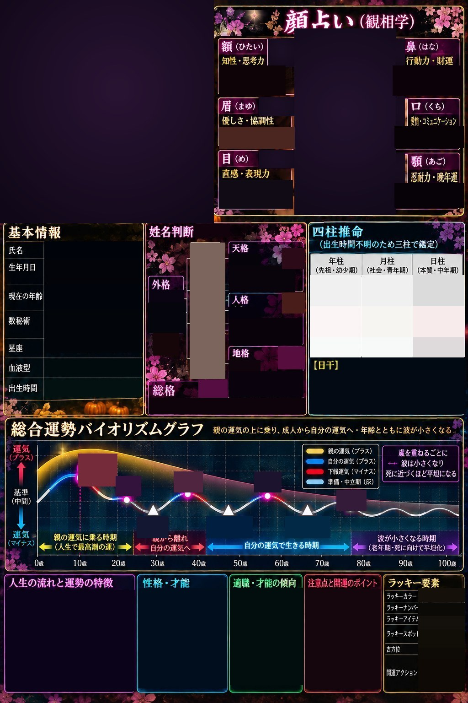

<meta charset="utf-8">
<title>総合運勢鑑定書</title>
<meta name="claude:viewport-fit-sides" content="cover">
<link rel="preconnect" href="https://fonts.googleapis.com">
<link rel="preconnect" href="https://fonts.gstatic.com" crossorigin>
<link rel="stylesheet" href="https://fonts.googleapis.com/css2?family=Shippori+Mincho:wght@700;800&family=Zen+Kaku+Gothic+New:wght@500;700&display=swap">
<style>
/* 入力画面 → 鑑定書（見本の画像を固定し、数字と文言だけ重ねる）。2画面を行き来する */
:root {
  --bg: #0d0716;
  --panel: #1b1129;
  --panel2: #261839;
  --ink: #f4eefc;
  --muted: #b7a8d0;
  --line: #4a3468;
  --pink: #ff5fae;
  --gold: #f5c86a;
  --bad: #ff7d8f;
  --display: "Shippori Mincho", "Hiragino Mincho ProN", "Yu Mincho", serif;
  --body: "Zen Kaku Gothic New", "Hiragino Sans", "Yu Gothic", "Noto Sans JP", sans-serif;
  color-scheme: dark;
}
* { box-sizing: border-box; }
[hidden] { display: none !important; }
html, body { background: var(--bg); color: var(--ink); }
body {
  font-family: var(--body); font-size: 15px; line-height: 1.6;
  padding-left: max(16px, env(safe-area-inset-left, 0px));
  padding-right: max(16px, env(safe-area-inset-right, 0px));
  padding-block: 12px 40px;
}
main { max-width: 1024px; margin: 0 auto; display: grid; gap: 14px; }
h1 { margin: 0; font-family: var(--display); font-weight: 800; font-size: clamp(30px, 7vw, 54px); text-align: center; letter-spacing: .08em; color: var(--gold); text-shadow: 0 0 16px rgba(180, 108, 255, .6); text-wrap: balance; }
.lead { margin: 0; text-align: center; color: var(--muted); font-size: .9rem; }

/* 入力画面 */
form.box { background: var(--panel); border: 1.5px solid #8a6a2e; border-radius: 12px; padding: 8px clamp(12px, 3vw, 26px) 18px; }
.row { display: grid; grid-template-columns: 8.5em minmax(0, 1fr); gap: 8px 14px; align-items: center; padding-block: 10px; border-bottom: 1px solid rgba(201, 162, 75, .25); }
.row:last-of-type { border-bottom: 0; }
.lab { font-family: var(--display); font-weight: 800; color: var(--gold); font-size: 16px; }
.fld { display: flex; flex-wrap: wrap; gap: 8px 12px; align-items: center; min-width: 0; }
input[type="text"], input[type="number"], select { font: inherit; font-size: 16px; color: var(--ink); background: #07030e; border: 1px solid #8a6a2e; border-radius: 8px; padding: 8px 10px; min-width: 0; max-width: 100%; }
input[type="text"] { flex: 1 1 9em; }
input[type="number"] { width: 7em; }
.radio { display: inline-flex; gap: 6px; align-items: center; cursor: pointer; min-height: 32px; }
.radio input { width: 18px; height: 18px; accent-color: var(--pink); }
.sub { color: var(--muted); font-size: 13px; }
.facegrid { display: grid; grid-template-columns: repeat(auto-fit, minmax(150px, 1fr)); gap: 10px; width: 100%; }
.facegrid label { display: grid; gap: 4px; font-size: 13px; color: var(--muted); }
.btn { position: relative; display: inline-flex; align-items: center; justify-content: center; min-height: 46px; padding: 0 18px; border-radius: 999px; font: inherit; font-weight: 700; cursor: pointer; background: var(--pink); color: #1a0b19; border: 0; user-select: none; -webkit-user-select: none; }
.btn.sub2 { background: transparent; color: var(--ink); border: 1px solid var(--line); }
.btn input[type="file"] { position: absolute; inset: 0; width: 100%; height: 100%; opacity: 0; cursor: pointer; font-size: 100px; z-index: 1; }
.btn:focus-within { outline: 2px solid var(--gold); outline-offset: 2px; }
.thumb { width: 64px; height: 64px; border-radius: 8px; object-fit: cover; border: 1px solid var(--line); }
.go { display: block; width: 100%; margin-top: 14px; font-family: var(--display); font-weight: 800; font-size: clamp(24px, 5.5vw, 38px); letter-spacing: .08em; color: #fff7dc; padding: 12px; border-radius: 14px; cursor: pointer; border: 2px solid var(--gold); background: linear-gradient(90deg, #ff4f9a, #ffb347, #ffe66b, #5cf0a0, #45b8ff, #9b6cff, #ff4f9a); background-size: 300% 100%; text-shadow: 0 2px 0 #5a2a00, 0 0 12px rgba(0, 0, 0, .6); animation: rainbow 8s linear infinite; }
@keyframes rainbow { to { background-position: 300% 0; } }
@media (prefers-reduced-motion: reduce) { .go { animation: none; } }
.err { color: var(--bad); font-weight: 700; text-align: center; margin: 10px 0 0; }
input:focus-visible, select:focus-visible, button:focus-visible, .btn:focus-visible { outline: 2px solid var(--gold); outline-offset: 2px; }

/* 鑑定書 */
.bar { display: flex; flex-wrap: wrap; gap: 10px; justify-content: space-between; align-items: center; }
.wrap { position: relative; width: 100%; overflow: hidden; border-radius: 6px; }
.stage { position: absolute; left: 0; top: 0; width: 1024px; height: 1536px; transform-origin: 0 0; }
.stage > img.base { position: absolute; left: 0; top: 0; width: 1024px; height: 1536px; max-width: none; }
.p { position: absolute; overflow: hidden; display: flex; flex-direction: column; justify-content: center; color: #fff; font-family: var(--body); font-weight: 500; line-height: 1.32; word-break: break-all; }
.p.c { align-items: center; text-align: center; }
.p.v { writing-mode: vertical-rl; -webkit-writing-mode: vertical-rl; flex-direction: row; justify-content: center; align-items: center; }
.p .b { font-family: var(--display); font-weight: 800; }
.p .s { font-size: .62em; opacity: .9; display: block; }
.p.dark { color: #22160c; }
.p.photo { background: #1a1024; padding: 0; align-items: center; }
.p.photo img { width: 100%; height: 100%; object-fit: cover; display: block; max-width: none; }
.p.photo .ph { color: #e9dcf7; font-size: 22px; font-weight: 700; text-align: center; line-height: 1.5; }
.p.crop { background-repeat: no-repeat; background-color: #1a1024; }
.badge { border-radius: 6px; font-family: var(--display); font-weight: 800; }
ul.l { margin: 0; padding: 0 0 0 1em; }
ul.l li { margin: 0 0 .16em; }
ul.l li::marker { color: var(--c, #ff8fd0); }
.note { color: var(--muted); font-size: .8rem; margin: 0; }
@media (max-width: 560px) { .row { grid-template-columns: minmax(0, 1fr); gap: 6px; } }
</style>

<main>
  <!-- 入力画面 -->
  <section id="inputView">
    <h1>総合運勢鑑定</h1>
    <p class="lead">入れた内容で、下の鑑定書のひな形に数字と文言を割り当てます</p>
    <form class="box" id="f" autocomplete="off" novalidate>
      <div class="row"><span class="lab">姓(名字)</span><div class="fld"><input type="text" id="sei" aria-label="姓"><span class="lab">名</span><input type="text" id="mei" aria-label="名"></div></div>
      <div class="row"><label class="lab" for="kana">ふりがな</label><div class="fld"><input type="text" id="kana"></div></div>
      <div class="row"><label class="lab" for="alias">呼び名</label><div class="fld"><input type="text" id="alias"><span class="sub">名前の下の飾り文字（ローマ字など）</span></div></div>
      <div class="row"><span class="lab">性別</span><div class="fld">
        <label class="radio"><input type="radio" name="sex" value="m">男性</label>
        <label class="radio"><input type="radio" name="sex" value="f">女性</label>
        <label class="radio"><input type="radio" name="sex" value="n">答えない</label>
        <span class="sub">厄年が男女で違うため</span></div></div>
      <div class="row"><span class="lab">生年月日</span><div class="fld"><select id="by" aria-label="年"></select><select id="bm" aria-label="月"></select><select id="bd" aria-label="日"></select></div></div>
      <div class="row"><span class="lab">血液型</span><div class="fld">
        <label class="radio"><input type="radio" name="blood" value="A">A型</label>
        <label class="radio"><input type="radio" name="blood" value="B">B型</label>
        <label class="radio"><input type="radio" name="blood" value="O">O型</label>
        <label class="radio"><input type="radio" name="blood" value="AB">AB型</label>
        <label class="radio"><input type="radio" name="blood" value="">不明</label></div></div>
      <div class="row"><span class="lab">出生時間</span><div class="fld">
        <label class="radio"><input type="radio" name="tk" value="0">分からない</label>
        <label class="radio"><input type="radio" name="tk" value="1">入れる</label>
        <select id="th" aria-label="時"></select><select id="tm" aria-label="分"></select></div></div>
      <div class="row"><span class="lab">顔写真</span><div class="fld">
        <span class="btn" id="camBtn">カメラで撮る<input id="camIn" type="file" accept="image/*" capture="user" aria-label="カメラで撮る"></span>
        <span class="btn sub2">写真を選ぶ・撮る<input id="pickIn" type="file" accept="image/*" aria-label="写真を選ぶ・撮る"></span>
        <button class="btn sub2" id="readFace" type="button" hidden>写真から人相を読む</button>
        <button class="btn sub2" id="clearPhoto" type="button">写真を消す</button>
        
        <span class="sub" id="camNote"></span>
        <div style="width:100%;display:grid;gap:6px">
          <label class="sub" for="plainIn">ボタンで開かない時は、こちらの欄を押してください（そのままの入力欄）</label>
          <input id="plainIn" type="file" accept="image/*" style="color:var(--ink);max-width:100%">
          <div id="pasteBox" contenteditable="true" role="textbox" aria-label="写真を貼り付ける所" style="border:1px dashed var(--line);border-radius:8px;padding:10px;color:var(--muted);font-size:13px;min-height:44px">ここを長押しして「貼り付け」でも写真を入れられます（写真をコピーしてから）</div>
          <p class="sub" id="diag" style="margin:0;font-size:12px"></p>
        </div></div></div>
      <div class="row"><span class="lab">人相</span><div class="fld"><div class="facegrid" id="facegrid"></div></div></div>
      <div class="row"><label class="lab" for="baseNum">占成人<br>(基準数)</label><div class="fld"><input id="baseNum" type="number" inputmode="numeric" min="10" max="60" step="1" placeholder="任意"><span class="sub">入れるとグラフの厄・成人の年齢が出ます（前厄＝−9／本厄＝＋9／二回目成人＝＋18／後厄＝＋27／三回目成人＝＋36／死前厄＝＋45）</span></div></div>
      <button class="go" type="submit">鑑定書を作る ▶</button>
      <p class="err" id="err" hidden></p>
      <p class="note" style="margin-top:10px">入れた内容と写真はこの端末に上書き保存され、次に開いた時もそのまま出ます。どこにも送りません。姓名判断は旧字体（康熙字典の形）・熊崎式で数えます。</p>
    </form>
  </section>

  <!-- 鑑定書 -->
  <section id="resultView" hidden>
    <div class="bar">
      <button class="btn sub2" id="back" type="button">◀ 入力に戻る</button>
      <span class="note" id="resNote"></span>
    </div>
    <div class="wrap" id="wrap" style="margin-top:10px">
      <div class="stage" id="stage">
        
      </div>
    </div>
    <p class="note" style="margin-top:8px">グラフの線は見本の絵のままで、年齢の数字と「現在」の線だけが動きます。四柱推命は太陽の位置から節入りを計算しています。顔占いは入力画面の人相から出しています。人相は手で選ぶか、Claude にログインして開いた時は「写真から人相を読む」で写真から選べます。</p>
  </section>
</main>

<script>
const STROKE_GROUPS={1:"一丨丶丿乀乁乙乚亅",2:"丁丂七丄丅乂乃乄乜九了二亠人亻儿入八冂冖冫几凵刀刁刂力勹匕匚匸十卜卩厂厶又𠂉𠆢𠘨",3:"万丈三上下丌个丫丸久乇么乞也亍于亡亼兀兦凡凢刃刄劜勺卂千叉口囗土士夂夊夕大夨女子孑孒宀寸小尢尣尸屮山巛川工己已巳巾干幺广廴廾弋弓彐彑彡彳𠫓",4:"不与丏丐丑丒丗丬中丮丯丰丹之乢乣予云互五井亖亢什仁仂仃仄仆仇仈今介仍从仏仐允兂元公六兮冃冄内円冗冘凶刅分切刈勻勾勿匀匁匂化匹区卅卆升午卞卬厃厄厷厸及友双反収圠圡壬天太夫夬夭孔少尤尹尺屯巴帀幻廿开弌弔引弖心忄戈戸手扌才支攴攵文斗斤方无日曰月木欠止歹殳毋毌比毛氏气水氵火灬爪爫父爻爿片牙牛牜犬犭王耂𠀋𠥼𠬝𡈽𡴭",5:"且丕世丘丙丱主丼乍乎乏亗仔仕他仗付仙仚仛仝仞仟仠仡仢代令以仨仫仭兄冉冊冋册写冬冭凥処凧凷凸凹出刊刋功加匃包匆匇北匛匜匝匞卉半占卡卭卮卯厇厈厺去叏古句另叧叨叩只叫召叭叮可台叱史右叴叵叶号司叺囘囙囚四囜圢圣圤圥圦圧外夘央夯夰失夲夳奴奵奶孕宁它宄尒尓尻尼屴屵屶左巧巨市布平幼庀庁広弁弍弗弘必戉戊戹扎斥旡旦旧未末本札朮正歺母氐民氶氷永氺犮玄玉玊瓜瓦甘生用甩田由甲申疋疒癶白皮皿目矛矢石示礻禸禾穴立𠮟𡗗𤴔",6:"丞丟両乑乨乩争亘亙交亥亦仮仯仰仱仲仳仵件价任份仾仿伀企伂伃伈伉伊伋伌伍伎伏伐休伒伕伖众伙会伜伝充兆兇先光兊全共关再冎冰冱冲决冴凩凪刎刑划刓刔刕刖列刘劣劤劥劦劧匈匟匠匡卋卌卍印危厽叒吁吂吃各合吉吊吋同名后吏吐向吒吓囝回囟因囡団在圩圪圬圭圮圯地圳圴圷圸壮夅夙多夛夵夶夷夸奸她奻奼好妁如妃妄孖字存宅宆宇守安寺尖尗尦尽屰屹屺屻屼屽州巩帆帇年幵庄异弎式弐弙弛弜当彴彵忇忈忉戌戍戎扐扑扒打扔払扖收攷旨早旬旭曲曳有朱朳朴朶朷朸机朽朾朿杁次此死毎氒気氻氾氿汀汁求灮灯灰牝牞牟犯犰甪甶百礼穵竹米糸缶网罒罓羊羽老考而耒耳聿肉臣自至臼舌舛舟艮色艸艹虍虫血行衣衤襾西覀𠂢𠂤𠔉𠠺𡉕𡚴𡧃𡵅𢎭𢦏𣱿𦉰𦍌𦣝𦥑",7:"丣两串乕乱亊些亜亨伮伯估伱伳伴伵伶伷伸伹伺伻似伽伾佀佂佃但佇佈佉佋佌位低住佐佑佒体佔何佖佗佘余佚佛作佝佞佟你佣佤克兌免兎兏児兵冏冝况冶冷冸冺初刢判別刧刨利刪助努劫劬劭劯劰励労匣匤匥医卣卲即却卵厎叓吚君吝吞吟吠吡吤否吧吨吩吪含听吭吮启吱吴吵吶吸吹吻吼吽吾呀呂呃呄呆呇呈呉告呍呎呏呑呕囤囥囦囧囨囫园囮困囱囲図圻圽圾圿址坂坅坆均坊坌坍坎坏坐坑坒壯声壱売壳夆夋夽夾夿妊妋妌妎妒妓妕妖妗妙妛妝妟妣妤妥妧妨孚孛孜孝孞宊宋完宍宎宏宐宑寽対寿尨尩尫尬尾尿局屁岇岈岊岌岏岐岑岒岔巠巡巫巵帋希帍庇床庋庎序延廷弃弄弝弞弟形彣彤彷彸役彺忋忌忍忐忑忒忓忔忖志忘忙応成我戒戓戻托扚扛扜扞扠扡扣扤扨攸改攺攻攼斈斘旰旱旲旴旵更曵杅杆杇杈杉杌杍李杏材村杓杔杕杖杙杜杝杞束杠条杢杣杤来杦极欤步每氙汊汋汍汎汏汐汒汔汕汗汙汚汛汜汝汞江池汢灵灶灸灼災灾牠牡牢牣犱犲犴状玎玐瓧甫甬男甸甹町甼疓疔疕皀皁皃盁矣矴礽禿秀私秂究竌竍糺系羋耴臫良虬見角言谷豆豕豸貝赤走赱足身車辛辰辵辶邑酉釆里𡉴𡉻𡵢𡵸𣏐𣏒𣏓𤰖𧾷",8:"並乖乳乴乵事亝亞亟享京佩佪佬佮佯佰佱佳併佶佷佸佹佺佻佼佽佾使侁侂侃侄侅來侈侉侊例侌侍侎侏侐侑侒侓侔侖侗侘侙侚供依侞侟侠価侫侭兒兓兔兕兩其具典冐冼冽冾冿凭凮函刮到刱刲刳刵制刷券刹刺刻刼劵劶劷劸効劺劻劼劽劾匊匋匌匼卑卒卓協卥卦卧卷卸卹卺厓厔叀参叔叕取受呞呟呢呤呦呧周呩呪呫呬呭呮呰呱味呴呵呶呷呻呼命呿咀咁咃咄咅咆咈咉咊咋和咍咎咏咐咑咒咕咖咜囶囷囹固国坡坢坤坥坦坧坨坩坪坫坭坮坯坰坱坳坴坵坷坹坺坻坼坾坿垁垂垃垈垉夌夜夝奃奄奆奇奈奉妬妭妮妯妰妲妳妷妹妺妻妼妾姁姃姄姆姈姉姊始姍姐姑姒姓委孟季孤孥学宓宔宕宖宗官宙定宛宜宝実尚尭居屆屈届岝岟岠岡岢岣岦岧岨岩岪岫岬岭岱岲岳岴岵岶岷岸岺岻岼岾峅巻帑帒帔帕帖帘帙帚帛并幷幸底庖店庚府廸弆弡弢弣弤弥弦弧弨弩彔彼彽彾彿往征徂徃径忝忞忠忡忢忤忨忩忪快忬忭忮忯忰忱忲忳念忶忸忺忻忼忽忿戔戕或戝戽戾房所扭扮扯扱扳扶批扺扻扼扽找承技抂抃抄抅抉把抍抎抏抐抑抒抓抔投抖抗折抙抛抜択攽放政斦斧於旹旺旻旼旾旿昀昂昃昄昆昇昈昉昊昌昍明昏昑昒易昔昕昖朋服杪杬杭杮杯杰東杲杳杴杵杶杷杻杼松板构枅枇枉枋枌枎枏析枑枒枓枕枖林枘枙枚枛果枝枠枡枢枦枩欣欧武歧歩歽歾歿殀殁殴毒毟氓氛汧汨汪汫汭汯汰汲汳汴汶汸汹決汻汽汾沁沂沃沄沅沆沇沈沉沌沍沐沒沓沔沕沖沗沘沙沚沛沜沟没沢沪炁炅炆炉炊炎炒炔炕炖炗炘炙炛爬爭爸牀版牧牨物牫犹犾狀狁狂狃狄狆狇玓玔玕玖玗玘瓨瓩画甽甾甿畀畃畄疌疙疚疜疝的皯盂盰盱盲直矤知矸矻矼社礿祀祁秄秇秈秉秊穸穹空竎竏竺竻籵糾羌耓耵肋肌肎臤臥臽臾舍舎舏艻艽艾艿芀芁虎虯虱軋辷采金長镸門阜阝隶隹雨青非𠈓𠦝𡶒𡶜𡶡𢌞𣏕𣏚𣏟𣏤𤘩𦫿𨐌",9:"乗乹亭亮亯亰侮侯侲侵侶侷侹侻侼侽侾便俀俁係促俄俅俆俈俉俊俋俌俍俎俏俐俑俒俔俗俘俚俛俜保俟俠信俢俣俤俥俦兗兘兪养冑冒冠凂凃凾剃剄剅則剉削剋剌前剏勀勁勃勄勅勆勇勈勉勊匍匧匨匩匽南単卻卽厖厘厙厚叙叚叛叝咟咠咡咢咤咥咦咧咨咩咪咫咬咭咮咯咱咲咳咷咸咹咺咻咼咽咾咿哀品哂哃哄哆哇哈哉哊响哎哘囿圀型垌垓垔垕垗垙垚垜垝垞垟垠垡垢垣垤垧垨垩垪垬垰垳埓壴変复奎奏奐契奒奓奔奕妍姙姚姜姝姞姟姣姤姥姦姧姨姪姫姮姯姱姲姴姶姷姸姻姿娀威娃娄孨孩客宣室宥宦宨宩封専尮屋屍屎屏峇峉峋峐峒峗峙峝峠峡巷巸巹帝帟帠帥幽庠庢庤庥度建廻廼弇弈弫弬弭弮弯彖彦待徇很徉徊律後徍怇怊怍怎怏怐怒怓怔怕怖怗怘怙怚怛怜思怟怠怡怢怤急怦性怨怩怪怫怭怯怱怳怵怺扁扂扃抦抨披抬抱抳抵抶抷抹抺抻押抽抾抿拂拄担拆拇拈拉拊拌拍拎拏拐拑拒拓拔拕拖拗拘拙拚招拜拝拠拡攱敃敄故斫施斿既昜昝昞星映昡昢昣昤春昦昧昨昩昪昫昬昭昮是昰昱昳昴昵昶昷昹昺昼昿曷朎朏枯枰枱枲枳枴枵架枷枸枹枻枼枽柀柁柂柃柄柅柆柈柉柊柎柏某柑柒染柔柗柘柙柚柛柜柝柞柡柢柤柦柧柩柬柮柯柰柱柲柳柴柵柶柷柹査柼柾柿栁栂栃栄栐欨歪歫殂殃殄殅殆残段毖毗毘毡氟沫沭沮沰沱沲河沴沸油沺治沼沽沾沿況泂泄泅泆泉泊泌泍泏泐泑泒泓泔法泖泗泙泛泜泝泠泡波泣泥泧注泩泪泫泬泭泮泯泰泱泲泳泴泻浅炟炤炫炬炭炮炯炰炱炳炴炷炸点為炻爯爰爼牁牮牯牱牲牴狉狌狎狐狒狕狖狗狘狙狛玅玜玞玟玠玢玥玦玨玩玪玫玭瓪瓫瓮瓯瓰瓱瓲甚甠畆畇畈畉畊畋界畍畎畏畐畑畒疢疣疤疥疫疺癸発皅皆皇皈盃盅盆盈盶相盹盻盼盾眀省眄眆眇眈眉眊看県矜矦矧砂砅砆砉砌砍砎砑砒砕砙祄祅祆祇祈祉祊祋禹禺秋秌种秏科秒秔秕秖穽穾穿窀突窂窃竑竒竓竕竽竾竿笂籹籼籽籾粁粂紀紂紃約紅紆紇紈紉缸罔罕羍美羏羐羑羿耍耎耏耐耑耔耶耷肓肖肘肙肚肛肜肝肞致臿舡舢芃芄芇芉芊芋芍芎芑芒芓芔芖虐虵虶虷虹虺虻衁衂衍衎表衩衫要觔訂訃訄訅訇計貞負赳赴軌軍辸辺辻込酊酋重釓釔閂面靣革韋韭音頁風飛食飠首香𠗖𡋗𡋤𡜆𡱖𡶷𡿺𢈘𢪸𤇆𥁊𥄢𥐮𥝱𥫣𥫤𥸮𧘔𧘕𩙿",10:"丵乘亳修俯俰俱俲俳俵俶俸俺俼俽俾俿倀倁倂倄倅倆倇倉倊個倌倍倎倏倐們倒倓倔倖倗倘候倚倛倜倝倞借倡倢倣値倥倦倧倨倩倪倫倬倭倮倰倲倳倵倶倹党兼冓冡冢冣冤冥冦凄凅准凈凉凊凋凌凍剔剕剖剗剘剚剛剜剝剞剟剠剡剣剤剥剦勌勍勏勐勑匪匫厝原叞叟哠員哢哥哦哨哩哪哬哭哮哯哱哲哳哶哺哼哽哾哿唀唁唄唅唆唇唈唉唌唍唎唏唐唔唕唖圁圂圃圄垸垽埀埃埆埇埈埋埌城埏埒埔埕埖埗夏套奘奙奚娉娌娍娎娑娒娓娗娘娚娜娞娟娠娣娤娥娧娨娩娪娭娯娰孫宬宭宮宯宰宱宲害宴宵家宷宸容宺宼尃射尅将屐屑屓展峨峩峪峭峮峯峰峱峲峴島峺峻峽崁差帨師席帮帯帰座庨庪庫庬庭弉弰弱彧徏徐徑徒従恀恁恂恃恆恇恈恉恊恋恌恍恐恑恒恔恕恖恗恙恚恝恟恠恡恢恣恤恥恧恨恩恪恫恬恭息恰恱恵恷扄扆扇拪括拭拮拯拱拲拳拴拵拶拷拼拽拾拿持挂挃挄指挈按挊挋挌挍挐挑挓挖挘挙挟挧敇效敉斊料旁旂旃旄旅旆晀晁時晃晄晅晆晈晉晊晋晌晎晏晑晒書曺朒朓朔朕栓栔栖栗栘栙栝栞栟校栢栧栨栩株栫栬栭栯栰栱栲栳栴核根栻格栽栾栿桀桁桂桃桄桅框案桉桊桌桍桎桐桑桒桓桔桕桗桘桙桛桜桝桟档桧欫欬欯歬殉殊殷毣毦毧氣氤氦氧氨泚洀洄洇洊洋洌洎洏洑洒洓洗洙洚洛洞洟洤津洦洧洨洩洪洫洮洯洱洲洳洴洵洶洸洹活洼洽派洿流浄烈烊烋烏烑烓烔烕烖烘烙烜烝烟烤烬爹牂牷牸特狟狠狡狢狥狩独狭玆玲玳玵玷玹玻玼玽玿珀珂珅珆珈珉珊珋珌珍珎珏瓞瓟瓴甡畔畗留畚畛畜畝畞畟畠疰疱疲疳疴疵疸疹疼疽疾疿痀痁痂痃痄病痆症皋皌皍皰盉益盋盌盍盎眎眒眔眕眗眙眚眛眜眞真眠眢眤眥眦眨眩矩砝砠砡砢砣砥砦砧砬砭砮砰砲破砵砷砺砿祏祐祑祓祔祕祖祗祘祚祛祜祝神祟祠祢秘秚秝秞租秠秡秢秣秤秥秦秧秩秪秫秬秭称窄窅窆窈窊窋站竚竛竜竝笆笇笈笊笋笏笑笒笔粃粆粇粉粋粍粏粐紊紋納紏紐紑紒紓純紕紖紗紘紙級紛紜紝紞素紡索紣紦缺缼罘羔羖羗翀翁翃翅翆耄者耆耕耖耗耘耙耹耺耻耼耽耾耿聀肁股肢肤肥肦肧肩肪肫肬肭肯肱育肴肸肹肺臬臭舀舁舐舨舩航舫般舮芘芙芚芛芝芟芠芡芣芤芥芦芧芨芩芪芫芬芭芮芯芰花芲芳芴芷芸芹芺芻芼芽芾苅苆虒虓虔蚇蚉蚊蚋蚌蚍蚑蚓蚕蚖蚘蚚蚜蚝蚡蚣蚤蚦蚧蚨蚩蚪衃衄衯衰衱衲衵衷衹衻衽衾衿袀袁袂覍訊訌討訏訐訑訒訓訔訕訖託記谸豇豈豗豹豺豻財貢貤起趵趷躬軏軑軒軔辱达辿迀迁迂迄迅迆邕邗邘邙邛酌配酎酏酒釖釗釘釙釚釛釜針釞釟釡閃閄阞隺隻隼隽馬骨高髟鬥鬯鬲鬼朗﨏神𠝏𡋽𡌛𡝂𡷠𣑊𣑋𣑑𣑥𣳾𣴀𣴎𤇾𥁕𥫱𦊆𦐂𦨞𧘱𨑕",11:"乾乿倻偀偁偂偃偅偆假偈偉偊偌偎偏偐偑偒偓偕偖偗偙做停偟偠偢偣健偦偧偪偬偭偰偱偲側偵偶偸偽兜冕冨减凑凰剪剬剮副剰剱勒勔動勖勗勘務匏匐匘匙匬匭匾匿區卙卾卿厠厡厩參唪唫售唯唱唲唳唵唶唸唹唻唼唽唾啀啁啄啅商啇啉啊啌啍問啐啑啓啖啗啘啚啛啜啝啞啠啡啣啤啦圇圈圉圊國圏埜埝埞域埠埡埣埤埦埧埩埭埰埴埵埶執埸培基埻埼埽埾埿堀堂堃堄堅堆堈堉堊堋堌堍壷奛奝奞娵娶娼婀婁婄婅婆婇婈婉婌婐婕婚婞婢婣婥婦婧婪婬婭孮孯孰宿寀寁寂寃寄寅密寇寉將專尉屙屚屛屜崆崇崋崍崎崐崑崒崔崕崖崗崘崙崚崛崝崟崠崢崣崤崦崧崩崫巢巣帲帳帵帶帷常庱庳庵庶康庸庹弴張弶強弸彗彩彪彫彬徖得徘徙徜徝從徠御徢恾恿悁悂悃悄悆悈悉悊悋悌悍悎悑悒悓悔悕悖悗悘悚悛悝悞悟悠悢患悤悥悦悧您悩悪戚戛戜扈挨挩挪挫挭振挲挵挶挹挺挻挼挽挾挿捁捂捃捄捆捉捊捋捌捍捎捏捐捒捓捔捕捗捘捙捛捜掴敍敏敐救敒敔敕敖敗敘教斌斎斛斜斬断旈旉旋旌旎族晗晘晙晚晛晜晝晞晟晠晡晢晣晤晥晦晧晨晩曹曻曼曽朖朗朙望桫桮桯桰桱桲桴桵桶桷桹桺桻桼桾桿梁梂梃梄梅梆梈梍梏梐梓梔梖梗梘梙梚梛梜條梟梠梡梢梣梥梦梧梨梩梪梫梭梮梯械梱梲梳梴梵梶梹梺梻梼欲欵欶欷欸殍殸殹殺殻毫毬毮浗浘浙浚浜浞浟浠浡浣浤浥浦浧浩浪浬浮浯浰浴海浸浹浼涀涁涂涅涇消涉涊涌涍涎涑涒涓涔涕涖涗涘涛涜烱烹烺烽焃焄焅焆焇焈焉焋焌焏爽牻牼牽牾牿犁狳狴狷狸狹狺狻狼狽狾猂率珒珓珖珙珝珞珠珡珣珥珦珧珩珪班珮珱瓠瓶瓷瓸甜産畡畢畤略畦畧畩痊痌痍痎痏痒痓痔痕皎皐盒盔盖盗眭眮眯眴眵眶眷眸眹眺眼眽眾着矪研硃硄硅硇硈硌硎硏硑硒祥祧票祩祫祭离秱秸移秼窐窑窒窓窔窕竟章竡笘笙笛笞笟笠笣笥符笧笨笩笪笫第笭笮笯笰笱笳笴笵笶笹笻笽粒粔粕粗粘紪紫紬紭紮累細紱紲紳紵紹紺紼紽紾紿絀絁終絃組絅絆絇絈絋経缻缽罛罜罝罟罠罡羚羜羝羞翈翊翌翎翏習耇耈耜耝耞耟聃聄聆聊胃胄胅胆胈胊背胍胎胏胒胔胕胖胗胘胙胚胛胝胞胠胡胤胥胦舂舲舳舴舵舶舷舸船舺艴芿苐苑苒苓苔苕苗苙苚苛苜苞苟苠苡苢苣苤若苦苧苨苪苫苭苯英苳苴苶苷苹苺苻苽苾茀茁茂范茄茅茆茇茈茉茊茋茌茎處虖虗虘虙虚蚫蚭蚯蚰蚱蚳蚴蚵蚶蚷蚸蚹蚿蛀蛁蛃蛄蛅蛆蛇蛉蛋蛍蛎衅衑衒術袈袋袍袒袖袗袘袙袚袛袜袞袟袠袢袤袨袪被袮袰規覐覓覔視觕觖觗觘訛訝訞訟訠訡訢訣訤訥訦訪訫訬設訯許訳谹谺豉豘豙豚豛豝豼貧貨販貪貫責貭貮赥赦赿趹趺趻趾跀跂躭躮躯軛軜軟転軣迊迋迍迎运近迒迓返迕迚邠邡邢那邥邦邨邪酓酔酖酗酘酙酚酛釈野釣釤釥釦釧釩釪釬釭釮釯釰釱釵釶釷釹釻釼镹閆閇閈閉閊阡阢阤雀雩雪雫靪頂頃頄飡飢飣馗魚鳥鹵鹿麥麦麻殺祥﨡﨣﨤𠵅𡌶𡍄𡸳𡸴𢭆𢭐𣆶𣇃𣇄𣍲𣪘𣵀𥒎𥞩𥹖𥿔𥿠𦙾𧦅𨥆𨥉",12:"傀傁傃傄傅傆傈傊傍傎傏傐傑傒傓傔傕傖傘備傚傛傜傞傟傠傡傢傣兟兠凒凓凕凖凱凲剩割剳剴創勛勜勝勞匑博厤厥厦厨叅啻啼啽啾啿喀喁喂喃善喆喇喈喉喊喋喎喏喑喒喓喔喗喘喙喚喜喝喞喟喣喤喧喨喩喪喫喬喭單喰喲営圌圍堕堙堛堝堞堟堠堡堤堦堧堪堭堯堰報堲場堵堹堺堽堿塀塁壹壺壻夡奟奠奡奢奣奥婷婺婻婾婿媄媋媒媓媖媙媚媛媜媞媟媠媢媧媬嫏孱富寍寎寏寐寒寓寔尊尋尌尞尰就属屟屠屡崱崴崹崽崿嵂嵃嵆嵇嵈嵋嵌嵎嵐嵑嵒嵓嵕嵙嵜巽帽帾幀幃幄幅幇幉幾庽庾庿廁廂廃廊弑弻弼弽弾彘彭徤徧徨復循徫悰悱悲悳悴悵悶悷悸悻悼悽悾惂惄情惆惇惈惉惊惋惎惏惑惓惔惕惘惙惚惛惜惝惞惟惠惡惢惣惥惧惨惮戞戟戦扉捥捦捧捨捩捫捬捭据捱捲捴捵捶捷捸捺捻捼捽捿掀掂掃掄掇授掉掊掌掎掏掐排掔掕掖掘掙掚掛掞掟掠採探掣掤接掦控推掩措掫掬掭掮掯掵掻掽攲敝敞敟敠敢散敦敧斐斑斝斮斯旐晪晫晬晭普景晰晳晴晵晶晷晸晹智晻晼晾晿暀暁暃暑曾替最朁朜朝朞期棃棄棅棆棈棉棊棋棌棍棏棐棑棒棓棔棕棖棗棘棙棚棜棝棟棠棡棣棤棥棧棨棪棫棬棭森棯棰棱棲棵棶棷棹棺棻棼棽椀椁椃椄椅椆椇椈椉椊椋椌植椎椏椐椑椒椓椖椗椙椚椛検椡椢椣椥椦椨椪欹欺欻欽款欿歮殕殖殗殘殼殽毯毱毳氬氮涙涪涫涬涮涯液涴涵涷涸涹涼涽涿淀淂淄淅淆淇淈淊淋淌淎淏淐淑淒淕淖淘淙淚淛淝淞淟淠淡淢淤淥淦淨淩淪淫淬淮淯淰深淳淴淵淶混淹淺添淼渀渄清渇済渉渊渋渓渕渗渚焔焙焚焜焞焠無焦焫焭焮焯焰焱然焸焼煮爲牋牌牚犀犂犄犇犉猄猅猇猊猋猍猒猓猖猗猘猙猛猜猝猞猟珴珵珸珹珺珻珽現珿琀琁球琄琅理琇琉琊琑琓瓺瓻瓼甤甥甦甯番畫畬畭畯異畲畳畴疎疏痗痘痙痛痜痝痞痟痠痡痢痣痤痧痩登發皓皕皖皴盙盛盜睂睅睆睇睊睍睎睏矞矟矬短硜硝硞硠硡硣硤硨硪硫硬确硯硲硴祲祷禄稀稂稃稇稈稉稊程稌稍税窖窗窘竢竣童竦竧笄笿筀筁筅筆筇筈等筋筌筍筎筏筐筑筒答筕策筝粛粞粟粠粡粢粤粥粦粧粨粫粭絍絎絏結絑絓絖絗絙絚絜絝絞絡絢絣絥給絧絨絪絮絰統絲絳絵絶缾缿罣羡羢翔翕耊耋耠聒聠胭胮胯胰胱胲胳胴胵胶胸胹胺胻胼能胾脂脃脅脆脇脈脉脊脋脍臰臵臶臸舃舄舒舜舼茖茗茘茛茜茞茟茡茢茨茫茬茭茮茯茰茱茲茳茴茵茶茷茸茹茺茼茽荀荂荃荄荅荇草荊荍荎荏荐荑荒荔荕荖荗荘荢荣虛虜虝蚈蛑蛒蛔蛕蛗蛙蛚蛛蛜蛞蛟蛠蛣蛤蛥蛦蛧蛩蛬蛭蛮蛯衆衈衉衕衖街衘袱袴袵袷袺袼袽袾袿裀裁裂裃裄装覃覕覗覘覚觚觝訴訵訶訷診註証訽訾詀詁詃詅詆詇詈詉詍詎詐詑詒詓詔評詖詗詘詛詜詝詞詠象豾貂貯貰貲貳貴貶買貸貹貺費貼貽貿賀賁赧趁趂趄超趈越跅跆跇跈跊跋跌跎跏跑跔跕跖跗跙跚跛距践躰軨軫軮軰軱軷軸軹軺軻軼軽辜辝迠迢迣迤迥迦迨迩迪迫迭迮迯述迱邯邰邱邲邳邴邵邶邸酡酢酣酤酥釉量釽釿鈀鈁鈄鈅鈆鈇鈉鈊鈌鈍鈎鈐鈑鈒鈓鈔鈕鈖鈗鈘鈜鈝鈞鈣鈤鈥鈦鈨鈩鈬開閌閍閎閏閑間閔閖阥阦阨阪阬阮阯阱防阳阴雁雄雅集雇雯雰雱雲靫靭靮靱韌項順頇須颪飥飦飧馭馮髠鳦黃黄黍黑黒黹虜﨑猪𠷡𡈁𡙇𢛳𢮦𣇵𣓤𣷓𣷹𣷺𤭖𥆩𥞴𥹢𥹥𥿻𦀌𦚰𦥯𧮳𧲸𨸟",13:"亂亶傪催傭傯傰傱傲傳傴債傷傹傺傻傽傾僀僂僃僄僅僇僉僊僌働兾剷剸剹剽募勠勡勢勣勤勥勦勧匓匯厪厫叠喿嗁嗃嗄嗅嗆嗇嗉嗋嗌嗎嗑嗒嗓嗔嗗嗘嗚嗛嗜嗝嗞嗟嗢嗣嗤嗩圑園圓圕塉塊塋塌塍塏塐塑塒塔塕塗塘塙塚塞塟塡塢塤塧塨塩填塰壼奧奨媐媱媲媳媵媸媺媻媼媽媾媿嫁嫂嫄嫆嫈嫉嫋嫌嫐孳寖寗寘寙寚寛寝尟尠尲嵊嵟嵠嵡嵢嵤嵩嵪嵬嵭嵯嵰嵳嵶幋幌幎幐幹廆廈廉廋廌弿彀彁彙徬徭微徯徰惰惱惲想惴惵惶惷惸惹惺惻惼惽愀愁愂愃愆愇愈愉愊愌愍愎意愐愑愒愓愔愕愖愗愙愚愛愜愞感愡愢慨戠戡戢戣掲掾揀揁揃揄揆揈揉揎描提揑插揓揔揕揖揚換揜揠握揣揥揩揪揫揬揭揮揲揳援揵揶揷揸揹揺搜敫敬数斒斟新旒旔暄暇暈暉暋暌暍暎暐暒暖暗暘暙會朠椰椱椳椴椵椶椸椹椻椽椿楂楅楆楉楊楎楓楔楕楗楙楚楛楜楝楞楠楡楢楣楤楥楦楨楩楪楫楬業楮楯楰楱楲楳楴極楷楸楹楺楻楼楽楾楿榀榁概榔榘歃歆歇歰歳殛殾殿毀毓毷毹渙減渝渞渟渠渡渢渣渤渥渦渧温渫測渭渮港渲渴渶游渹渺渻渼渾湃湄湅湈湉湊湋湌湍湎湏湑湒湓湔湖湗湘湛湜湝湞湟湢湣湧湨湫湮湯湲湳湶湻湽湾湿満溂溌滞煁煅煆煇煉煊煋煌煎煐煒煓煕煖煗煙煚煜煞煠煢煤煥煦照煨煩煬爺牃牎牏牐牒犍犎猢猤猥猧猨猩猪猫猬献猯猱猲猳猴猵猶猷猹珷琚琛琢琤琥琦琨琩琪琫琬琭琮琯琰琱琲琳琴琵琶琹琺瓿甁甞當畷畸畹畺痬痮痯痰痱痲痳痴痹痺痼痾痿瘀瘁瘂瘃瘄皙盞盟睒睖睗睘睚睛睜睞睟睠睡睢督睤睥睦睧睨睪睫睬矠矮硺硼碁碆碇碊碌碍碎碏碑碓碔碕碗碘碚碰祹祺祻祼祾祿禀禁禅禽稑稔稕稗稘稙稚稛稜稞稟稠稡窞窟窠窣竨竩竪竫筠筤筥筦筧筩筪筬筭筮筯筰筱筲筳筴筵筷筹筺筿節粮粰粱粲粳糀絛絸絹絺絻絽絿綁綂綃綅綆綈綉綋綌綍綏綑經綖綗継続綛罤罥罦羣群羦羨義羪翛耡聖聘肄肅肆脖脗脘脚脛脜脞脠脣脤脧脩脬脯脰脱脳脵臹舅舝艀艃艄艅艆艇艉茝茣荰荳荵荷荸荻荼荽荿莀莂莄莅莆莇莉莊莍莎莒莓莔莕莖莘莙莚莛莜莝莞莟莠莢莦莧莨莩莪莫莬莱莵虞號蛸蛹蛺蛻蛼蛽蛾蜀蜂蜃蜄蜅蜆蜇蜈蜉蜊蜋蜍蜎蜏蜐蜑蜒蜓蜔衙裊裋裌裍裎裏裑裒裓裔裕裘裙裛補裝裞裟裡覛覜觜解觥触觧詡詢詣詥試詧詩詫詬詭詮詰話該詳詵詶詷詹詺詻詼詾詿誀誂誃誄誅誆誇誉豊豋豢豣豤豦貅貆貇貉貊賂賃賄賅賆資賈賉賊賋賍賎赩趍趐趑趼跟跡跣跤跥跧跨跪跫跬路跰跱跲跳跴躱軭軾輀輂較輅輇輈載輊輌辞辟辠農迴迵迶迷迹迺迻追迾退送适逃逄逅逆逈邽邾郁郃郄郅郇郈郊郌郎酧酩酪酬酭鈮鈯鈰鈳鈴鈵鈶鈷鈸鈹鈺鈼鈾鈿鉀鉂鉃鉄鉅鉆鉇鉈鉉鉊鉋鉍鉎鉏鉐鉑鉖鉗鉘鉙鉚鉛鉜鉝鉞鉠鉡鉢鉤鉥鉦鉧鉨鉩鉮鉯鉰鉱閘閙閝閞閟閠阷阸阹阺阻阼阽阿陀陁陂附雉雊雋雌雍雎零雷雹雺電靕靖靳靴靶靷靸靹韮韴韵頊頌頍頎頏預頑頒頓颫飩飪飫飭飮飯飰飱飲馰馱馲馳馴馵骪骬骭骮髢鬽魛魞鳧鳩鳫鳬鳰麀麁麂黽鼎鼓鼔鼠鼡廊塚﨓𠌫𠹤𠹭𠺕𡏄𢰝𢰤𣕚𣖔𤚥𤟱𥇍𥇥𥓙𦀗𦧝𦰩𧚄𧚓𨋳𨥫𨸶",14:"僎像僐僑僓僔僕僖僘僙僚僜僝僞僟僡僢僣僤僥僦僧僨僩僭僮僯僱僳兢冩凘凳凴劀劂劃劄勨勩勪勬匰匱匲厭厮厯厰嗶嗷嗹嗽嗾嗿嘅嘆嘇嘈嘉嘊嘍嘎嘏嘐嘑嘒嘔嘖嘗嘘嘙嘛噓圖團塲塵塸塹塼塾塿墀墁境墅墇墈墉墊墋墌墍墏墐墓墔墖増壽夐夢夣夤夥奩奪奫奬嫖嫗嫚嫜嫠嫡嫣嫥嫦嫩嫪嫮嫰孵寞察寠寡寢寤寥實寧寨對屢屣嵹嵺嵾嵿嶁嶂嶃嶄嶇嶈嶊嶋嶌幑幔幕幖幗幘幛廎廏廐廑廒廓廔廕廖彄彅彯彰徱徳徴愧愨愪愫愬愰愱愴愵愶愷愺愼愽愾愿慁慂慄慅慆慇慈慉慊態慌慍慎戧戩截戫搆搉搊損搏搐搒搓搔搖搗搘搞搠搢搤搥搦搨搩搪搬搭搯搰搴搵搶携搽搾搿摂敲斉斠斡斲旖旗暚暛暜暝暟暠暢暤暦朅朢榊榍榎榑榒榕榖榛榜榠榡榥榦榧榨榫榭榮榯榰榱榲榴榷榸榺榻榼榾榿槀槁槃槅槇槈槊構槌槍槎槏槐槑槓槖槗様槙槝槞槩樮歉歊歌歍歴殞殟殠毃毄氳溍溏源溓準溘溙溜溝溟溠溢溥溧溪溫溭溮溯溱溲溳溴溶溷溺溻溽溿滀滁滂滃滄滅滇滈滉滊滋滍滎滏滑滓滔滕滙滝漓煹煽熀熄熅熇熈熊熌熏熒熔熕熖熙爾牓犒犓犖猺猻猽猾猿獃獄獅琿瑀瑁瑃瑄瑆瑇瑋瑍瑑瑒瑓瑕瑗瑙瑚瑛瑜瑝瑞瑟甃甄甅甆甧畱畻畼畽疐疑瘇瘈瘉瘊瘋瘌瘍瘏瘒瘓瘕瘖瘘皶皷皸皹盠盡監睰睲睳睴睹睺睼睽睾睿瞀瞄硾碝碞碟碡碣碤碧碨碩碪碬碭碯碱碲碳碵禊禋禌禍禎福禑禓禔禕禖禘稧稫稭種稯稰稱稲窩窪窬竬竭端竰箄箆箇箉箋箍箎箏箐箑箒箔箕箖算箘箙箚箛箜箝箞箟箠管箥箪粶粷粹粺粻粼粽精粿綜綝綞綟綠綢綣綦綧綪綫綬維綮綯綰綱網綳綴綵綶綷綸綹綺綻綽綾綿緀緂緃緄緅緆緇緊緋緌緍緎総緑緒緕罧罨罩罪罫罭置署翟翠翡翣耤聚聞聟聡聢肇肈脹脺脼脽脾腅腆腇腊腋腌腎腐腑腒腓腔腕腗臧臺與舓舔舞艋荓莽莾莿菀菁菅菇菉菊菌菎菏菐菑菓菔菖菘菜菝菟菠菡菥菨菩菪菫華菰菱菲菴菶菷菸菹菻菼菽萁萃萄萆萇萊萋萌萍萎萏萑萓萕萗萙萠萢著虠虡蜘蜙蜚蜜蜞蜟蜡蜣蜥蜨蜩蜮蜯蜱蜲蜴蜷蜹蜺蜻蜼蜽蜾蜿蝀蝃蝅蝉蝋裧裨裯裰裱裲裳裴裵裷裸裹裼製裾褁褂褄覟覠覡觩觫誋誌認誏誐誑誒誓誕誖誗誘誙誚語誟誠誡誣誤誥誦誧誨誩説読誮谽豨豩豪貋貌貍賏賑賓賕賖赫趕趙跼跽跿踁踄踅踆踈踉踊踋踌躳躵輏輐輒輓輔輕辡辣逋逌逍逎透逐逑逓途逕逖逗逘這通逛逝逞速造逡逢連逧郒郕郗郘郙郛郜郝郞郟郡郢郤郥酲酳酴酵酷酸酹酺酻鉵鉶鉷鉸鉹鉻鉽鉾鉿銀銃銅銈銉銊銍銎銑銒銓銕銖銗銘銙銚銛銜銟銠銤銥銧銨銫銭銯閡関閣閤閥閦閧閨閩陋陌降陏限陒陔雑雒需靗靘静靤靺靻靼靽靿鞀鞁鞄鞅鞆韍韎韶韷頔頖頗領頙頚颭颮颯颰颱飳飴飶飼飽飾馛馝馹馺馼馽馿駁駃駄駅駆骯骰髣髤髥髦髧髩髪鬦魁魂魡鳲鳳鳴鳶麼麽鼻齊﨔福𠍱𠎁𠽟𣗄𤭯𤸎𥈞𥔎𥧄𥮲𦁠𦜝𦩘𦱳𨛗𨦇𨦈𨴐",15:"僲僵僶價僺僻僾儀儁儂儃億儆儇儈儉儋儌儍儎凛凜劅劇劈劉劊劌劍勰勱勲匳厲嘩嘬嘯嘰嘱嘲嘳嘴嘵嘶嘷嘸嘹嘻嘼嘽嘿噀噁噂噃噄噆噇噉噋噌噍噎噏噐噔噛噴圚墜墝增墟墠墡墢墦墨墩墪墫墮墱墲墳墸墹奭嫵嫶嫺嫻嫽嬀嬁嬈嬉嬋嬌審寫寬寮導尵層履屧嶐嶒嶓嶔嶕嶗嶙嶛嶝嶟嶠嶢嶤巤幜幞幟幡幢幣幤廙廚廛廜廝廞廟廠廡廢廣弊彇彈影徵德徸徹慓慕慘慙慚慝慞慟慠慢慣慥慧慫慬慮慯慰慱慲慳慴慵慶慷慸慻慼慾慿憀憁憂憃憄憇戮戯揅摋摎摏摑摒摓摔摘摚摛摜摝摟摠摡摣摧摩摭摯摳摴摶摸摹摺摻摽撃整敵敷數敺斳暫暭暮暱暲暴暵槢槣槥槧槨槪槫槭槮槯槱槲槳槴槵槶槹槻槽槾槿樀樁樂樃樅樊樋樌樏樑樒樓樔樕樗標樚樛樝樞樟樠模樢樣樤樨権横樫樰歎歐歒歓歯歵殢殣殤毅毆毿氂滌滫滬滭滮滯滲滴滷滸滹滻滽滾滿漁漂漄漆漈漉漊漌漍漏漐漑演漕漖漘漚漛漠漢漣漥漦漩漪漫漬漭漯漰漱漲漳漵漶漸漻漼漾漿潁潅熚熛熟熠熢熨熬熮熯熰熱熲熳爴牅牕牖牗犛獍獎獏獐獒瑠瑢瑣瑤瑦瑧瑨瑩瑪瑫瑭瑮瑯瑰瑱瑲瑳瑶畾畿瘙瘛瘜瘝瘞瘟瘠瘡瘢瘣瘤瘥瘦瘧瘨瘩皚皛皜皝皞皺盤瞋瞌瞍瞎瞑確碻碼碽碾碿磁磅磆磇磈磉磊磋磌磎磐磑磒磓磔磕磖禛禜禝禡稴稵稷稸稹稺稻稼稽稾稿穀穂穃窮窯窰窳箬箭箯箰箱箲箴箵箶箸箺箻箼箽篁篂範篅篆篇篈篊篋篌篏糂糄糅糇糈糉糊糍糎緖緗緘緙線緜緝緞締緡緢緣緤緥緦編緩緪緫緬緭緯緱緲練緵緶緹緺緻縀縁縄縅罰罱羭羮羯翥翦翨翩翫翬耦聤聦聨腟腠腡腥腦腧腨腩腫腭腮腯腰腱腴腷腸腹腺臱興舖舗艎艏艑莭萩萪萬萯萱萵萸萹萼落葅葆葇葈葉葊葍葎葏葑葒葖葘葙葚葛葜葟葠葡葢董葤葥葦葧葩葪葫葬葭葮葯葰葱葳葴葵葶葷葸葹葺葼葽蒁蒂蒄蒅蒋虢虣蝌蝍蝎蝑蝓蝕蝗蝘蝙蝝蝟蝠蝡蝣蝤蝥蝦蝨蝪蝮蝯蝱蝲蝴蝶蝸蝻蝼蝿衚衛衜衝褆複褊褌褍褎褏褐褒褓褕褖褘褙褚褜褝覥觭誯誰課誳誶誷誹誻誼誾調諂諃諄諆談諈諉諊請諌諍諏諐諑諒諓諔諕論諗諚谾豌豎貎賙賚賛賜賝賞賠賡賢賣賤賦賨質賬趞趟趠趣踏踐踑踔踖踝踞踟踠踡踢踣踦踧踪躶躺躻輖輗輘輙輛輜輝輞輟輠輡輣輥輦輧輨輩輪輫輬辤迸逨逩逪逬逭逮逯週進逳逴逵逶逷逸逹部郫郭郯郰郲郴郵郶郷醁醂醃醅醆醇醉醊醋銲銶銷銸銹銺銻銼銽銿鋀鋁鋂鋃鋅鋆鋇鋈鋋鋌鋍鋎鋏鋐鋒鋓鋕鋗鋘鋙鋜鋝鋟鋠鋡鋣鋤鋥鋧鋨鋩鋪鋬鋭鋮鋰鋲鋳閫閬閭閲閴陖陗陘陛陜陝陞陟陡院陣除陥陦霂霃霄霅霆震霈霉霊靚靠鞉鞋鞍鞏鞐韐韑韯頜頞頠頡頣頦頫頬餂餃餇餈餉養餌駈駉駐駑駒駓駔駕駘駙駚駛駜駝駞駟骲骴骵骶骷髛髫髬髭髮髯髱髲髳髴鬧魃魄魅魣魥魦魨魪魫魬魭魮魯魲魳魴魵魶魷魸魹鳷鳹鴂鴃鴆鴇鴈鴉鴋鴎麃麄麨麩麪麸麾黎鼏鼐鼑齒凞𡼞𣘸𣘹𣘺𣙇𤸷𥉌𥧔𥻂𥻘𦳝𧮾𧶠𨂊𨛺𨦺𨦻𩊠𩒐𩗏𩿎",16:"亀儐儒儔儕儖儗儘儙儚儛儜儝儞冀冪凝凞剿劑劒劓劔勳叡噞噠噡噢噣噤噦器噩噪噫噬噭噯噱噲噵噶噸噺圛圜墺墻墼墾壁壂壃壄壅壇壈壊壌奮奯嬖嬗嬙嬛嬝嬡嬢學寯寰嶧嶫嶬嶮嶰嶲嶴幨廥廨廩彊彛彜徼憊憋憍憎憐憑憒憓憔憖憗憘憙憚憜憝憟憠憤憥憧憨憩憪憫憬憭憮憲戰撅撇撈撏撐撑撒撓撕撘撙撚撛撝撞撟撡撣撤撥撦撨撩撫撬播撮撰撲撳撹敽斴旘旙暸暹暻暼暾暿曀曁曂曃曄曆曇曈曉曌樲樳樴樵樶樷樸樹樺樻樽樾樿橄橅橆橇橈橉橊橋橎橐橑橒橕橖橘橙橛機橡橢橤橦橧橪橫橱橲橳橸橺歔歖歘歙歷殨殩殪殫毇毈氄氅潏潑潒潓潔潗潘潙潚潛潜潝潞潟潠潡潢潤潦潨潬潭潮潯潰潴潸潺潼潽潾澀澁澂澃澄澆澇澈澋澌澍澎澐澑澒澓澔澖澗澘澚熹熺熾熿燀燁燃燄燈燉燋燌燎燐燒燓燔燕燖燗燙燚燜獖獗獘獝獞獟獠獣瑾璀璁璃璅璆璇璈璉璋瓢甌甍甎疁疂瘭瘰瘲瘳瘴瘵瘸瘹瘺瘻瘼癀癊皟皠皡盥盦盧瞔瞕瞖瞚瞞瞟瞠瞢磚磛磟磠磡磤磦磧磨磪磬禦穄穅穆穇穈穌積穎穏穐窵窶窹窺窻窼竱築篔篖篗篙篚篛篝篠篤篥篦篨篩篪篭簑糏糒糓糔糕糖糗糘縈縉縊縋縐縑縒縕縗縛縜縝縞縟縠縡縢縣縦縧縨罃罵罷罸羲翮翯翰耨聭腿膀膁膂膃膄膅膆膈膊膋膎膏膐臲臻舉舘艖艗艘艙蒐蒒蒓蒔蒕蒗蒙蒜蒞蒟蒡蒦蒨蒩蒪蒭蒯蒱蒲蒴蒸蒹蒺蒻蒼蒽蒾蒿蓀蓁蓂蓄蓆蓇蓈蓉蓊蓋蓌蓍蓎蓏蓐蓑蓓蓖蓙蓚蓜虤螂螃螄螅螆螇螈螉螋螌融螐螓螕螗螘螙螞螟螠螢螣螧衞衟衠衡褞褠褥褦褧褨褪褫褰褱褲覦覧覩親觱諛諜諝諞諟諠諡諢諤諦諧諫諬諭諮諰諱諳諴諵諶諷諸諺諼諾諿謀謁謂豫豬豭貐貒貓賭賯賰賱賲賴賵赬赭赮趦踰踱踳踴踵踶踷踸踹踽蹀蹁蹂蹄躾輭輮輯輳輴輵輶輷輸輹輺輻辥辦辧辨逼逾逿遁遂遃遄遅遇遉遊運遌遍過遏遐遑遒道達違遖遥都郾郿鄀鄂鄄鄅鄆鄈醍醎醐醑醒醓醔醕醗鉼鋷鋸鋹鋺鋻鋼鋿錀錂錄錆錈錍錏錐錑錔錕錘錙錚錜錝錞錟錠錡錢錣錤錥錦錧錩錪錫錬錮錯録錳錴錵錶錷錺錻鍄鍈閶閹閺閻閼閽閾閿陪陬陮陰陲陳陴陵陶陷陸険隷雕霍霎霏霑霓霔霖靛靜靦鞕鞖鞗鞘鞙韸頤頥頭頮頯頰頲頳頴頵頷頸頻頼頽颴餐餑餒餓餔餕餖餗餘餝馞馟駢駧駪駫駬駭駮駰駱駲骸骹骻骼髵髷髹髺髻鬨鬳魿鮀鮃鮄鮅鮆鮇鮉鮊鮋鮍鮎鮏鮐鮑鮒鮓鮔鮖鮗鴑鴒鴕鴗鴘鴛鴜鴝鴞鴟鴣鴦鴨鴪鴫鴬麅麇麈麬麭麮黆黔黕默黙鼒鼼鼽齓龍龜諸都𠏹𠠇𡑭𡑮𡢽𢡛𣽾𤎼𤹪𥱋𥱤𥻨𦃭𦣪𧏚𧏛𧜎𧪄𨂻𨨞𨨩𨺉𨿸𩊱𩛰𩣆",17:"償儡儣儧儨優儬劕勴勵勶匵厳嚀嚄嚅嚆嚇嚈嚊嚋嚌嚏壍壎壐壑壒壓壔壕壖壗嬥嬪嬬嬭嬰嬲嬴嬶孺寱尶屨嶷嶸嶹嶺嶼嶽幪幫幬彌徽憶憸憹憺憼憾懀懁懂懃懆懇懈應懊懋懌懍懎懏懐戲撻撼撽撾撿擁擂擄擅擇擉擊擋擌操擎擐擑擒擔擕擗擘據斁斂斣斵曎曏曔曖曚橾橿檀檁檃檄檆檇檉檋檍檎檐檑檔檗檛檜檝檞檟檠檡檢檣檥檪歛歝殬殭殮毚氈氉氊澟澠澡澣澤澥澦澧澨澪澮澯澰澱澳澵澶澹澼澾激濁濂濃濅濆濇濈濉濊營燠燥燦燧燬燭燮燵牆犠獦獧獨獩獪獫獬璏璐璑璒璗璘璙璚璜璞璟璠璡璣甑甒癁療癃癄癅癆癇癈癉癋癌皢皣皤皥盨盪瞤瞥瞧瞩瞪瞬瞭瞮瞯瞰瞱瞳瞵瞶矯矰磯磲磳磴磶磷磹磺磻磽磾磿礀礁禧禨禩禪禫穉穕穖穗穙穜穝窾窿竃竴篰篲篳篴篵篶篷篸篹篺篼篾簀簁簂簃簄簆簇簉簋簌簍簎簏簒簓簔簗糙糚糜糝糞糟糠糢縫縬縭縮縯縱縲縳縵縶縷縹縺縻總績縿繁繃繄繅繆繇繊繍罄罅罹翲翳耬聯聰聱聲聳膓膕膖膘膚膛膜膝膞膠膢膣膤臨艚艜艝艱蓧蓪蓬蓮蓯蓰蓱蓲蓴蓷蓺蓻蓼蓽蓿蔀蔂蔃蔆蔇蔌蔎蔐蔑蔓蔔蔕蔗蔘蔚蔛蔜蔞蔟蔡蔢蔣蔤蔥蔦蔧蔪蔫蔬蔭蔯蔲蔳蔴蔵蔶虧螫螬螭螮螯螱螳螵螺螻螽螾螿蟀蟁蟄蟆蟇蟈蟉蟊蟋蟎蟐褵褶褷褸褹褺褻褾襀襁襂襃襄襅覬覯觳謄謅謆謇謊謋謌謍謎謐謑謔謖謗謙謚講謜謝謞謟謠謡谿豁豏豳貔賷賸賺賻購賽趨蹇蹈蹉蹊蹋蹌蹍蹎蹏蹐輾輿轀轁轂轃轄轅遘遙遛遜遝遞遠遡遢遣鄍鄐鄒鄔鄕鄖鄗醘醜醞醡醢醤錨鍇鍉鍊鍋鍍鍐鍑鍒鍔鍕鍖鍗鍘鍚鍛鍜鍞鍠鍤鍥鍧鍩鍪鍫鍬鍭鍮鍯鍰鍱鍳鍴鍵鍶鍺鍼鍽鍾鍿鎀鎁鎂闃闆闇闈闉闊闋闌闍陻陼陽陾陿隁隂隃隄隅隆隈隉隊隋隍階隸雖霙霚霛霜霝霞鞚鞜鞞鞟鞠韓韔韱顄顆顇顊颶颷餅餚餛餜餞餟餠餡餢餤餦餧館馘馣駴駵駸駹駻駼駽駾駿騁騂騃骾髽髿鬀鬁鬂鬴魈鮚鮝鮞鮟鮠鮦鮧鮨鮩鮪鮫鮬鮭鮮鮰鮱鮲鮴鴯鴰鴲鴳鴴鴺鴻鴼鴽鴾鴿鵁鵂鵃鵄鵅鵆鵇鵈麋麯麰黈黏黛黜黝點黻黿鼢鼾鼿齋齔龠隆𠢹𡽶𢢫𣜌𣜜𣜿𤢖𤩍𤺋𦪌𦹀𦹥𧏾𧐐𧜣𧯇𨉷𨕫𨩃𨩱𨵱𩜙𪀚𪀯𪐷",18:"儭儯儱儲叢嚔嚕嚙嚚嚝嚞嚟嚠嚢壘壙夓嬸屩幭幮廫彍彝懕懜懝懞懟懡懢懣懥懦懧戳戴擠擡擢擣擤擦擧擩擪擬擭擯擰擱斃斷旛曙曛曜朦檫檬檮檯檰檱檳檴檸檻檽檾檿櫁櫂櫃櫆櫈櫉歟歸殯濔濕濘濚濛濞濟濠濡濤濨濩濫濬濮濯濰濱濵濶燸燹燻燼燾燿爀爵獮獯獰獱獲璢璥璦璧璨璩璪璫璮璯環璱璲甓甕疅癒癕癖癘癙癜皦皧皨皽盬瞹瞻瞼瞽瞾瞿礆礇礌礎礐礑礒禮禯穟穠穡穢穣竄竅簙簛簞簟簠簡簣簥簦簧簨簪簫簬簱糦糧繎繐繒織繕繖繘繙繚繝繞繟繡繢繥繧罇罽罾罿羀羴翹翺翻翼耮聴聵聶職膨膩膮膰膲膳膴膵舊舙艟艠蔽蔾蔿蕀蕁蕃蕆蕈蕉蕊蕋蕎蕏蕐蕑蕒蕓蕕蕖蕗蕘蕙蕚蕜蕝蕞蕟蕠蕡蕢蕣蕤蕨蕩蕪蕫蕭蕯虩蟕蟖蟙蟚蟜蟟蟠蟢蟣蟤蟥蟦蟪蟫蟬蟭蟯蟱蟲蟳蟵蠎襆襉襌襍襏襒覆覰覲観觴謦謨謫謬謭謰謳謷謹謼謾豐豵貘貙賾賿贁贃贄贅蹔蹕蹙蹛蹜蹝蹞蹟蹠蹡蹢蹣蹤軀軁轆轇轉轊轌遦遧遨適遬遭遮遯遰鄘鄙鄚鄜鄞鄠鄢鄣鄥醦醨醪醫醬釐鎈鎊鎋鎌鎍鎏鎒鎔鎕鎖鎗鎘鎚鎛鎞鎡鎣鎤鎦鎧鎨鎫鎬鎭鎮鎰鎴鎵鎶鎹鎺闐闑闒闓闔闕闖闘随隑隔隕隖隗隘隙雘雙雚雛雜雝雞雟霡霢霣霤鞢鞣鞦鞨鞫鞬鞭鞮韗韘韙韺頾顋題額顎顏顑顒顓顔顕颸颺餫餬餮餱餲餳餴餵馥騄騅騊騋騌騎騏騐騑騒験骿髀髁髜鬃鬄鬅鬆鬈鬩鬵魋魌魍魎魏鮷鮸鮹鮻鮼鮾鮿鯀鯁鯆鯇鯈鯉鯊鯎鯏鯐鯑鯒鵊鵐鵑鵒鵓鵔鵙鵜鵝鵞鵟鵠鵡鵢鵣鵤鵥麌麎麏麿黋黟黠鼂鼕鼖鼦鼪鼫鼬齕𢷡𣝣𣝤𥖧𥼣𧑉𧝒𨪙𨫍𨻫𩝐𩷛𪎌",19:"儳儴儵劖勷勸厴嚥嚦嚧嚨嚩嚫嚬嚭嚮壚壜壝壞壟壠壡壢夒嬾孼寳寴寵巃幰廬懩懬懭懯懲懴擥擲擴擵擶擷擺擻擽擾擿攀攁攄攅斄曝曟曠櫌櫐櫑櫓櫔櫕櫖櫚櫛櫜櫝櫞櫟櫤歠殰殱毉濹濺濼濽濾瀀瀁瀅瀆瀇瀉瀊瀋瀍瀏瀑爆爇爈爉爍爕牘犢獵獷獸璵璹璺璻璽璿瓣甖疆疇癟癡矃矇矉矱礙礚礛礜礞礟礠禰禱穥穧穩穪穫竆簳簴簶簷簸簹簺簽簾簿籀糩糫繋繦繩繪繫繭繮繯繰繳繵繸繹羂羶羸羹翽翾膸膺膻膽膾膿臀臁臂臃臅臆臈臉臊臋舚艢艣艤艶蕷蕹蕺蕻蕽蕾蕿薀薁薄薅薆薇薈薉薊薋薌薏薐薑薓薔薗薘薙薛薜薝薟薠薢薤薥薦薧薨薪薫薬薮蟒蟶蟷蟸蟹蟺蟻蟾蟿蠁蠃蠅蠆蠉蠊蠋蠍蠏襖襗襚襛襜襞襟襠襡襢覇覈覴覵覶覷觶譁譂譃譄譅譆譈證譌譎譏譑譒譓譔譖識譙譚譛譜贇贈贉贊贋趫趬蹩蹬蹭蹯蹰蹱蹲蹴蹶蹹蹺蹻蹼軃軄軅轍轎轏轑轒轓轔辭辴遲遴遵遶遷選遹遺遼鄧鄩鄭鄮鄯鄰鄱鄲醭醮醯醰醱鎩鏁鏃鏄鏅鏆鏇鏈鏉鏊鏋鏌鏍鏐鏑鏓鏖鏗鏘鏙鏜鏝鏞鏟鏡鏢鏤鏥鏦鏧鏨鏱鏹闙闚關闝隚際障隝隟隠離難霧霨霪靡鞱鞲鞳鞴鞵鞶韜韝韞韲韻顖顗願顙顚顛類颻颼颿餹餺餻餼餽餾饀饁饂馦騖騙騚騞騠騢騣騤騧騨髃髄鬉鬋鬌鬍鬎鬷鯔鯖鯗鯘鯛鯝鯟鯡鯢鯣鯤鯥鯧鯨鯪鯫鯮鯯鯰鯱鯲鯳鯵鵩鵪鵫鵬鵯鵰鵲鵳鵶鵷鵺鵻鵼鵾鶃鶄鶆鶇鶉鶊鶍鶎鶏鹸麑麒麓麕麖麗麳麴麹黼鼃鼗齁齖齗齘龏龐類﨟𠑊𤂖𦾔𦿸𧸐𨊂𨗈𨗉𨫝𨫤𩩲𩸕𩸽𪂂",20:"嚱嚲嚳嚴嚶嚷壤壥孀孁孃孅孽孾寶巇巉巋巌廰懵懶懷懸攈攉攊攏斅旟曦曨朧櫧櫨櫪櫬櫰櫱櫲櫳濳瀕瀗瀘瀚瀛瀝瀞瀟瀠瀣瀦瀧瀨瀬爐爓爗犧犨獹獺獻瓈瓉瓊癢癤癥皪矍礥礦礧礩礪礫礬穭竇競籃籅籆籊籌籍籏籕籖糯繻繼繽繾繿纁纂纃罌羃羅羆翿耀聹聻臍臎臏臑臓艦艧艨薩薭薯薰薴薶薷薸薹薺薼薽薾薿藁藂藇藉藊藋藍藎藏藐蘤蠐蠑蠒蠓蠔蠕蠖蠘蠙襣襤襦覺觸觹譍譞譟譣警譩譫譬譭譯議譱譲豑豶贍贎贏躁躂躃躄躅躇躉軆轕轗轘辮遽避邀邁邂邃還邅邉鄴鄶鄷醲醳醴醵醶醸釋鏵鏷鏸鏺鏻鏽鐁鐂鐃鐄鐇鐈鐉鐍鐎鐏鐐鐓鐔鐕鐖鐗鐘鐙鐚鐟鐡闞闟闠闡隣隤隥霰霱露霳鞸鞹鞺韛韠響顢顣飂飃飄饅饆饇饈饉馨騫騭騮騰騱騳騵騶騷騸髆髈鬐鬒鬪鯷鯸鯹鯺鯽鯿鰀鰂鰄鰆鰈鰉鰊鰋鰌鰍鰏鰐鰑鰒鰓鰔鰕鰖鰘鰙鰚鰛鶒鶓鶕鶖鶗鶘鶙鶚鶡鶤鶩鶪鶫鹹麘麛麵麺黤黥黧黨鼯齚齝齞齟齠齡齢齣龑𣟧𦿶𦿷𩹉𪃹𪗱𪚲",21:"亹儷儸儹儺兤劗劘卛嚼嚾囀囁囂囃囍屬巍巐廱懺攓攔攖攘攙斕曩朇櫺櫻櫼櫽欂欃欄欅殲瀯瀰瀲瀴瀷瀹瀺瀼瀾爚爛獼瓌瓏瓐甗癧癨癩癪矑矒礭礮礰礱礴竈竉籐籑籒籓籔糲纆纇纈纉纊續纍纎纏纐罍羼耰臕臗臘艪藕藘藙藚藜藝藟藠藡藤藥藦藨藩藪藭藳蘯蠚蠛蠜蠞蠟蠡蠢蠣衊襪襫襭襮覼覽譴譶護譸譹譼譽贐贒贓贔趯躊躋躍軇轜轝轞轟辯邇邈鄹醺醻鐫鐮鐯鐱鐲鐳鐴鐵鐶鐸鐺鐻鐽鐿鑁闢闤闥闦隦隧隨隩險霶霸霹霻靧鞼鞾鞿韡顥顦顧飅飆飇飈飜饋饌饍饎饐饑饒騾驀驁驂驃驄驅驇髎髏鬖鬘鬹鬺魑魔鰜鰝鰞鰡鰢鰣鰤鰥鰦鰧鰨鰩鰪鰭鰮鰯鰰鶬鶮鶯鶱鶲鶴鶵鶸鶹鶺鶻鶼鶽鶿鷀鷁鷂鷃鷄鷆鷇鷉鷊鷏鹺鹻麝黬黭黮黯鼙鼚鼛鼱齎齦齧齨齩龒龝龡欄𢅻𣟿𤄃𥶡𥽜𦪷𨏍𨼲𩺊𪘂",22:"儻儼囅囈囉囊囋囎圝夔孋孌孿巎巑巒巓彎彲懼懽懾懿攛攜攝欆欇欉權欋歡氍灃灄灇灈灉灊灋灌爝爟瓓瓔瓖瓤疉疊癬癭癮礵禳禴穰竊竸籗籘籙籚籛籜籝籞籟籠籡糴纑纒罎罏聽聾臖臙臚臛艫藶藷藹藺藻藼藾藿蘀蘂蘄蘅蘆蘇蘊蘋蘍蘎蘐蘑蘓蘢蠧蠨襯襰襲覿譾譿讀讁讃讄讅贖贗躐躑躒躓躔躕轡轢邊邋邌鄺鄼鄽鑃鑄鑅鑈鑊鑌鑑鑒鑓镾隮隯隰隱隲霽霾韁韃顪顫飋饔饕饗饘饙驊驋驌驍驎驑驒驔驕髐鬙鬚鬛鬜鬫鬻魕魖鰱鰲鰵鰶鰷鰹鰺鰻鰽鰾鱁鱃鱄鱅鱆鱇鱈鷓鷔鷕鷖鷗鷙鷚鷞鷟鷠麞黐黰黱鼲鼴齪齬龔龕龢𣠤𩻄𪘚",23:"劚囌囏囐巖巗巘巙愹戀戁攞攟攢攣攤攦曫曬欏欐欑欒灑灔灕灘玀瓘癯癰皭籣籤籥籧糵纓纔纕纖羇臝蘒蘖蘗蘘蘙蘚蘛蘞蘡蘧蘩蘭蘰蠭蠮蠰蠱蠲襳襴襽覉觽變讋讌讍讎讏讐豅躘躙躚躛轣轤醼鑕鑙鑚鑛鑜鑞鑟鑠鑡鑢鑣隳靁靨韄韅顬顯饛饜驖驗驘驚驛髑髒髓體髞鬟鬠鱉鱊鱎鱏鱐鱒鱓鱔鱖鱗鱘鱚鱛鷣鷥鷦鷧鷩鷫鷭鷮鷯鷰鷲鷳鷴鷸鷺麟黲黴鼇鼷鼹齃齄齏齭齮齯齰齱𣠽𧃴𨯁𩻛𩻩𪆐",24:"囑囓壩奲屭戃戄攩攪攫曮玁玃瓚癱癲矕矗罐臞臟艭艷蘶蠵蠶蠹蠺衋衢襵襷讒讓讔讕讖贛躝躞軈邎酃醽醿釀鑨鑪鑫隴靂靃靄靆靇靈韆韇韈韤顰驝驟髕鬢鬭魗魘鱜鱝鱞鱟鱠鱣鱥鱧鱩鱪鱫鷹鷽鷾鸂鸇鸊鹼鹽齅齆齲齳齵齶齷𧄍𨯯",25:"廳攬斸欖欗欛灝灞爤瓛矙籩籬籭籮糶纘纚纛羈臠臡蘸蘹蘺蘼蘽蘿虀虁蠻襺襻襼覊觀觿讙貛躡躢酆釁釂鑭鑮鑯鑰鑱鑲靉顱髖鬣鱨鱭鱮鱰鸍鸎鸐鸑鸒黌黵鼈鼉鼟齇齺龣𧄹",26:"彠攮欝氎灣矚籯籰虂蠼讚趲躧邏邐酇酈釃釄鑵鑷靊韉饞饟驢髗鱲鱵鱶黶龥",27:"灎灤灥纜纝虆讜讝讞豓貜躩躪轥釅鑼鑽鑾鑿靍靎顳顴飌驤驥鬮鱷鱸鸕鸖黷𨷻",28:"戇欞欟癴豔钁饠驩鸙鸚黸鼺齽龞",29:"爨纞讟钃钄靏驪鬱鸛鸜",30:"厵韊驫鱺鸝鸞",32:"灩籲龖",33:"鱻麤龗"};
const STROKE={};for(const n in STROKE_GROUPS){for(const c of STROKE_GROUPS[n])STROKE[c]=+n;}
/* 新字体→旧字体 */
const KYU_PAIRS="亜亞悪惡圧壓囲圍医醫為爲壱壹隠隱栄榮営營衛衞駅驛円圓塩鹽縁緣艶艷応應欧歐殴毆桜櫻奥奧横橫温溫穏穩仮假価價画畫会會壊壞懐懷絵繪拡擴殻殼覚覺学學岳嶽楽樂渇渴巻卷陥陷勧勸寛寬歓歡缶罐観觀関關気氣帰歸亀龜偽僞戯戲犠犧旧舊拠據挙擧峡峽挟挾狭狹暁曉区區駆驅勲勳径徑茎莖恵惠渓溪経經蛍螢軽輕継繼鶏鷄芸藝撃擊欠缺研硏県縣倹儉剣劍険險圏圈検檢献獻権權顕顯験驗厳嚴効效広廣恒恆鉱鑛号號国國黒黑済濟砕碎斎齋剤劑雑雜参參桟棧蚕蠶惨慘賛贊残殘糸絲歯齒児兒辞辭湿濕実實写寫釈釋寿壽収收従從渋澁獣獸縦縱粛肅処處緒緖叙敍将將称稱焼燒証證奨奬条條状狀乗乘浄淨剰剩畳疊縄繩壌壤嬢孃譲讓醸釀触觸嘱囑寝寢慎愼真眞尽盡図圖粋粹酔醉随隨髄髓枢樞数數瀬瀨声聲斉齊静靜窃竊摂攝専專浅淺戦戰践踐銭錢潜潛繊纖禅禪双雙壮壯争爭荘莊捜搜挿插巣巢装裝総總騒騷増增蔵藏臓臟即卽属屬続續堕墮対對体體帯帶滞滯台臺滝瀧択擇沢澤担擔単單胆膽団團断斷弾彈遅遲痴癡虫蟲昼晝鋳鑄庁廳聴聽鎮鎭逓遞鉄鐵転轉点點伝傳灯燈当當党黨盗盜稲稻闘鬭徳德独獨読讀届屆弐貳悩惱脳腦覇霸廃廢拝拜売賣麦麥発發髪髮抜拔蛮蠻秘祕浜濱瓶甁払拂仏佛並竝辺邊変變弁辯舗舖宝寶豊豐没沒翻飜毎每万萬満滿黙默弥彌訳譯薬藥予豫余餘与與誉譽揺搖様樣謡謠来來頼賴乱亂覧覽竜龍両兩猟獵緑綠塁壘涙淚励勵礼禮隷隸霊靈齢齡恋戀炉爐労勞楼樓録錄湾灣郎郞晩晚姫姬尭堯槙槇遥遙瑶瑤祢禰穣穰巌巖莱萊亘亙曽曾祷禱渕淵薫薰芦蘆桧檜篭籠鴎鷗";
const KYU={};for(let i=0;i<KYU_PAIRS.length;i+=2)KYU[KYU_PAIRS[i]]=KYU_PAIRS[i+1];
const KANSU={"一":1,"二":2,"三":3,"四":4,"五":5,"六":6,"七":7,"八":8,"九":9,"十":10};
const HIRA="あ3い2う2え2お3か3き4く1け3こ2さ3し1す2せ3そ2た4ち3つ1て1と2な4に3ぬ2ね2の1は3ひ1ふ4へ1ほ4ま3み2む3め2も3や3ゆ2よ2ら2り2る1れ2ろ1わ2ゐ2ゑ3を3ん1";
const KATA="ア2イ2ウ3エ3オ3カ2キ3ク2ケ3コ2サ3シ3ス2セ2ソ2タ3チ3ツ3テ3ト2ナ2ニ2ヌ2ネ4ノ1ハ2ヒ2フ1ヘ1ホ4マ2ミ3ム2メ2モ3ヤ2ユ2ヨ3ラ2リ2ル2レ1ロ3ワ2ヰ4ヱ3ヲ3ン2ー1";
const KANA={};for(const s of [HIRA,KATA]){for(let i=0;i<s.length;i+=2)KANA[s[i]]=+s[i+1];}
const SMALL={"ぁ":"あ","ぃ":"い","ぅ":"う","ぇ":"え","ぉ":"お","っ":"つ","ゃ":"や","ゅ":"ゆ","ょ":"よ","ゎ":"わ","ァ":"ア","ィ":"イ","ゥ":"ウ","ェ":"エ","ォ":"オ","ッ":"ツ","ャ":"ヤ","ュ":"ユ","ョ":"ヨ","ヮ":"ワ"};
const overrides={};
function charInfo(c,prev){
  if(overrides[c]!=null) return {kyu:KYU[c]||c,n:overrides[c],src:"手で修正"};
  if(c==="々"&&prev) return {kyu:"々",n:prev.n,src:"前の字と同じ"};
  if(KANSU[c]) return {kyu:c,n:KANSU[c],src:"漢数字は数の値"};
  const nfd=c.normalize("NFD"),base=SMALL[nfd[0]]||nfd[0];
  if(KANA[base]!=null){let n=KANA[base];if(nfd.includes("゙"))n+=2;if(nfd.includes("゚"))n+=1;return {kyu:c,n,src:"かな"};}
  const k=KYU[c]||c;
  if(STROKE[k]!=null) return {kyu:k,n:STROKE[k],src:k!==c?"旧字「"+k+"」":"康熙字典"};
  if(STROKE[c]!=null) return {kyu:c,n:STROKE[c],src:"康熙字典"};
  return {kyu:c,n:0,src:"画数不明・入力して",warn:true};
}
function strokesOf(str){const out=[];let prev=null;for(const c of [...str]){const i=charInfo(c,prev);i.c=c;out.push(i);prev=i;}return out;}

/* 81数 熊崎式 */
const KK="大凶大凶大大吉吉凶凶大凶大凶大大吉吉凶凶大凶大大半凶凶凶吉凶大大大凶半凶大半大凶大凶凶凶大凶大大凶凶半大凶凶凶凶半半凶凶吉凶大凶大凶大大凶凶半凶半凶半凶凶半凶凶大";
const KW=["","万物の始まり・独立","分離・不安定","才知・発展","苦労・不遇","福徳・円満","天徳・安泰","独立・強い意志","努力・発展","困窮・孤独","空虚・波乱","再興・順調","挫折・気力不足","知恵・人気","孤独・離散","福寿・人望","徳望・大成","突破・権威","発展・意志","障害・苦難","空虚・不安","独立・頭領","中折・不和","旭日・隆盛","立身・財運","鋭さ・個性","波乱・英雄","中断・批判","波乱・別離","知恵・財力","浮き沈み・賭け","頭領・円満","好機・幸運","昇天・盛運","破家・災難","温和・技芸","義侠・波乱","権威・誠実","文芸・技芸","富貴・繁栄","浮き沈み・投機","実力・名声","多芸・散漫","散財・迷い","苦難・挫折","順風・大志","困難・不遇","開花・協力","指導・徳望","変転・吉凶混合","盛衰・不安定","盛衰・浮き沈み","先見・達成","外見と中身の差","苦労・不和","盛運と衰運","気力不足・停滞","努力・再起","晩成・転機","意志が弱まる","迷い・手探り","名声・繁栄","衰退・不和","吉祥・成功","浮き沈み・波乱","富貴・長寿","内外の不和","順調・自立","発明・知恵","不安定・停滞","空虚・孤独","吉凶相半ば","前半吉・後半苦","平穏・安泰","無力・停滞","守りで安泰","離散・困難","吉凶が交互","前半吉・晩年衰","心が揺れやすい","隠遁・試練","還元・大吉"];
const BOOK={"1": {"u": "出立運", "l": "吉", "a": "物事の始まりを示す数。困難に負けず目標をやり抜く力を持つ。"}, "2": {"u": "別離運", "l": "凶", "j": "大事な中年期に運が欠けやすく、お金と健康がそろいにくい。物静かで人の陰に回りがち。", "g": "さみしがりで人に囲まれていたいが、付き合いが長続きしにくい。", "c": "若いうちから親元を離れ、よその土地へ出やすい暗示。", "s": "総格に2はまず出ない。", "a": "物事が裂ける暗示の数。"}, "3": {"u": "活発運", "l": "吉", "j": "好奇心旺盛で行動的な物知り。どこにいても中心に立つ。", "g": "友人知人が多くにぎやか。目上の助言を聞くと伸びる。", "c": "明るく利発で人を引きつけ、健康にも恵まれる。お金の使いすぎに注意。", "s": "総格に3は出ない。", "a": "企画力と美的センスが光る。出しゃばりすぎには注意。"}, "4": {"u": "薄命運", "l": "凶", "j": "努力が実りにくく職を変えがち。支え役に回ると生きる。", "g": "家族や友人との縁が薄くなりがち。原因は自分の言動にあると心得て。", "c": "甘やかされて育ち、不満を人のせいにしがち。神経の疲れに注意。", "s": "総格に4は出ない。", "a": "頼りがちで信用とお金を失いやすい。体調管理を大切に。"}, "5": {"u": "実行運", "l": "吉", "j": "忙しく飛び回る行動派。経営の才があり、信頼を得て地位を築く。", "g": "国際派の社交運。人脈と情報に恵まれる。", "c": "健康で決断力があり、若いうちから先頭に立つ。語学を生かす仕事向き。", "s": "お金と行動力で活躍。ひと言多いのと晩年の心の揺れに注意。社会との関わりを保つと吉。"}, "6": {"u": "福禄運", "l": "大", "j": "責任ある仕事をそつなくこなし人望を得る。家庭円満で、中年に土台が固まる。", "g": "友人に囲まれ目上にも好かれ、頼られて財を築く。", "c": "子どもの頃から友達が多く度量が広い。健康で長生きの運。", "s": "大きな仕事を成し、地位と財を得る。運に甘えず人のために動くと、さらに充実。"}, "7": {"u": "開拓運", "l": "吉", "j": "理想へまっすぐ進み、自分に試練を課して伸びる粘り強さ。", "g": "友人は少なめでも深く長い付き合い。好きな人にはとことん尽くす。", "c": "好き嫌いがはっきりした頑固者。協調を意識しないと孤立しやすい。", "s": "一つのことに凝って徹底し、大きな成果を出す。我が強く共同事業は不向き。"}, "8": {"u": "積極的努力運", "l": "吉", "j": "陽気で勤勉な頑張り屋。ただ考えが甘いと空回りしやすい。", "g": "人は集まるが玉石混交。付き合う相手を選ぶ勇気が要る。", "c": "健康で活発、スポーツ向き。元気な時期ほどけがに注意。", "s": "闘志満々で困難に強く、人が嫌がる仕事で成果を出す。攻撃的すぎると人気が落ちる。"}, "9": {"u": "崩壊運", "l": "X", "j": "感情の波が大きい。特殊な才で一度は脚光を浴びるが長続きしにくい。急な災難や病に注意。", "g": "趣味・芸術・宗教など特殊な世界で交友が広がるが、続かず孤独になりやすい。", "c": "感受性が強い芸術家肌。幼い頃に家庭や環境の不安を抱えやすい。", "s": "初めは順調でも崩れやすい。医療・接客・芸術が向く。方向を誤らないこと。"}, "10": {"u": "空虚運", "l": "X", "j": "家族と離れたり人間関係に悩みやすく、勤め人向きではない。まれに大成功する人も。", "g": "思いをうまく言えず誤解されやすく、変わり者に見られがち。", "c": "体が弱めで家庭が不安定になりやすい。気分のムラで結婚に波乱。", "s": "努力が報われず焦りやすい。酒や賭け事にのめり込まないこと。"}, "11": {"u": "堅実運", "l": "吉", "j": "柔らかい印象だが芯は頑固な堅実派。積み重ねで地位を築く。", "g": "観察眼と行動力があり、良い助言者に恵まれる。自由業や記者向き。", "c": "健康で聡明。筋の通らないことが大嫌いな負けず嫌い。", "s": "不運も底力ではね返し、努力が実る。金運・子ども運がよく晩年安定。"}, "12": {"u": "妄想運", "l": "凶", "j": "才能はあるのに支持されにくい。うわべを取り繕うと人が離れる。", "g": "何を考えているか分かりにくく、控えめさも重なって孤立しがち。", "c": "神経質で体が弱め。家族の縁が薄く、家庭の温かさに恵まれにくい。", "s": "波乱が多く年とともに勢いが落ちやすいが、打たれ強さは天下一品。ポーカーフェイスを武器にすれば得もある。"}, "13": {"u": "才気煥発運", "l": "大", "j": "頭脳明晰で中心に立って物事を解決。仕事に恵まれ高い地位へ。", "g": "華やかな社交運。学芸で頭角を現す。良い友を大事に。", "c": "意欲とアイデアにあふれ早くから活躍。技術者・デザイナー・芸能向き。", "s": "学問や芸術で活躍。恋は自分から攻める情熱派。金運・仕事運がよく長寿。"}, "14": {"u": "破滅運", "l": "凶", "j": "中心にならないと気がすまず、信頼を得にくい。仕事も家庭も波乱含み。", "g": "喜怒哀楽が激しく、浅く広い付き合いになりやすい。", "c": "呼吸器が弱め。理想と現実の差に自分を縛って苦しむ。", "s": "不利と見ると逃げ、後で愚痴を言いがち。心も懐も不安定で、晩年さみしくなりやすい。"}, "15": {"u": "着実運", "l": "吉", "j": "管理能力に優れた堅実派。冷静な対処で事業も成功。家庭・子ども運良好。", "g": "交際が広く良い人脈を得る。情報・文化・貿易の仕事向き。", "c": "おおらかで人当たりが良く、早くから活躍。通訳・翻訳など国際派。", "s": "出しゃばらず着実に歩む事業家の器。仕事と家庭を両立し、福も寿も円満。"}, "16": {"u": "頭領運", "l": "大", "j": "眼力と判断力が群を抜き、情に厚く人が集まる。大事業を成す暗示。", "g": "目上にかわいがられ、後押しで伸びる。周りの人が運の鍵。", "c": "非凡な人や実力者との交わりから吸収して伸びる。", "s": "運が強く妬まれることもあるが、面倒見の良いリーダー。晩年は金運と家族に恵まれる。"}, "17": {"u": "直進運", "l": "吉", "j": "物腰は柔らかいが意志を貫き妥協しない。経営の才で好機をつかむ。", "g": "とっつきにくく好き嫌いがはっきり。少数の友と長く付き合う。", "c": "直感と観察眼で迷わず突き進む。頑固さに柔軟さを足すと吉。", "s": "苦労を栄華に変える人。独立で運が開ける。突発的なトラブルに注意。"}, "18": {"u": "戦闘運", "l": "吉", "j": "不屈の精神で目標を掲げて進む。計算違いと短絡に注意。", "g": "多方面に知人ができ社会に認められる。付き合いを選ぶと吉。", "c": "健康でスポーツ得意、エネルギーの塊。強引さは反感のもと。", "s": "大きな仕事を成し、お金に困らない。ピンチにも退かず切り抜ける。"}, "19": {"u": "孤独運", "l": "凶", "j": "集団生活が苦手で会社員・商売人には不向き。芸術・教育・宗教などで大成する人もまれに出る特殊な数。", "g": "感受性と直感が鋭く、芸術で成功する人も。目標を誤ると急落。", "c": "神経が細かく挫折しやすい。自分の世界に入ると他に無関心。", "s": "中年以降に運が急変しやすく、あと一歩で崩れる暗示。備えておけばはね返せる。"}, "20": {"u": "堕落運", "l": "X", "j": "思い通りにならないと感情的になり、不満で家庭運も下がる。", "g": "誘惑に弱く深みにはまりやすい。良い友を大切に。", "c": "流されやすく商売の成功は遠い。交通事故や賭け事での大損に注意。", "s": "物事が二つに割れる暗示。一発当てても続かない。落ち込むと人を避けがち。"}, "21": {"u": "独立運", "l": "吉", "j": "自分の才に自信がある即行動派。苦労しても最後は思い通りになる幸運児。", "g": "じっとしていない一匹狼。社会で仕事を成し遂げる期待の運。", "c": "何でも自分でやり遂げたい独立心。その自信が信頼を呼ぶ。", "s": "雑草のような強さ。若いうちに基礎を固め、年々地位と財を積む。女性は仕事で大成する人も。"}, "22": {"u": "非力運", "l": "凶", "j": "途中で投げ出しやすく、尽くしても報われにくい。心の疲れに注意。", "g": "独りよがりで孤立しがち。友は人生の宝と心得て。", "c": "判断が甘い頼り型。失敗を人のせいにしがち。", "s": "中年の成功が続きにくい見栄っ張り。晩年の運が下がりやすく、人付き合いに用心。"}, "23": {"u": "躍進運", "l": "吉", "j": "好機を確実にものにする。何にでも興味を持ち、女性でも仕事で成功。", "g": "組織が苦手な一匹狼。思ったことを全部口にしないのが付き合いのコツ。", "c": "負けず嫌いの直情型。頭の回転は速いが、せっかち。", "s": "発想・企画・行動力が抜群で、中身も見た目も充実した人生。非常時に底力。年を取っても人が絶えない。"}, "24": {"u": "裕福運", "l": "大", "j": "四方から財が集まる成功運。資産家や金融で活躍。女性はお財布を握る名人。", "g": "年を重ねるほど知人が増え、お金持ちと縁がある。", "c": "体が丈夫で物も心も満たされる。願いがかなう強運。", "s": "先を見て生きると運が開ける。無駄を省く合理派で一生お金に困らない。"}, "25": {"u": "活動運", "l": "吉", "j": "自分のものさしで決断する実力派。行動力と手腕で事業も成功。", "g": "気が強く自信家だが責任感があり失敗しない。国際交流の仕事向き。", "c": "決めたことは最後までやり通す粘り強さ。", "s": "外は穏やか、内は強情。いざという時の根性で一目置かれる。"}, "26": {"u": "動乱運", "l": "X", "j": "次々挑戦して中心に立つが、言動にムラがあり人望を得にくい。挫折と焦りの繰り返し。", "g": "周りとの縁が薄く、助けてくれる人より足を引っ張る人を選びがち。", "c": "自己主張が強く喜怒哀楽が激しい英雄肌。自説の押し通しは嫌われる。", "s": "博学多才で事業を当てるが、ワンマンさが災いして孤立しやすい。家庭に波乱の暗示。"}, "27": {"u": "強情運", "l": "凶", "j": "頑固で協力が苦手、孤独を感じやすい。他の格に凶数が重なると災難続き。", "g": "我を張ると友人運・異性運が落ち、変わり者扱いされる。", "c": "言い方がきつく冷たい人と誤解される。切れ者なので敵を作らないように。", "s": "頭脳と直感は鋭いが自我が強く孤立しやすい。女性は夫を尻に敷きすぎないように。"}, "28": {"u": "破壊運", "l": "凶", "j": "合わない人をとことん避ける癖が、中年の好運を損なう。", "g": "協力を得にくく努力が報われにくい。友人や恋人から迷惑を受けやすい。", "c": "こつこつ型だが応用が苦手。専門的で集中力の要る仕事向き。", "s": "幼い頃からもめごとが多く、家族と離れる暗示。勤勉を貫けば本来の明るさで道は開く。"}, "29": {"u": "特殊運", "l": "特", "j": "芸術・学問・政治など特殊な分野で活躍。発想が独特で、時流に乗れば金運も。", "g": "自分の世界にこもりがち。お金より心を重んじる。", "c": "創造性に満ち知的でクール。美的センスが抜群。", "s": "思い立ったら独断で即行動。協調は苦手でリスクはつきもの。金運・健康運は良好。女性は相手選びが大事。"}, "30": {"u": "強引運", "l": "X", "j": "浮き沈みが激しく誘惑に弱い。大金に目がくらんでの失敗に注意。", "g": "期待されやすく、手を広げすぎて消化不良に。運の急変も。", "c": "エネルギーを外へ出すが自制が苦手。度を越すと人が離れる。", "s": "花の時期は短く、ちやほやされた後にさみしさが来る。賭け事の素質はあるが最後は凶に出やすい。"}, "31": {"u": "順調運", "l": "大", "j": "マイペースでも周りへの気配りを忘れない。中年に基盤を築き出世。", "g": "恵まれた星の下の人。協調上手で、良い相棒を得ると一気に開ける。", "c": "健康できれい好き。笑顔で人を和ませる着実派。", "s": "どんな仕事でも力を出す。女性は特に吉で、家庭・子宝・健康に恵まれる。"}, "32": {"u": "天才運", "l": "大", "j": "天才的なひらめきと恐れ知らずの行動力で、何をしても成功。人脈と財運も。", "g": "八方美人も魅力に変わり、望む仕事で力を出せる。何でも楽しめる。", "c": "若いうちから才能を発揮。逆境をはねのける底力。", "s": "とてもツイている人。頭の良さと決断の速さで好機をつかみ、組織の中心で活躍。"}, "33": {"u": "権勢運", "l": "吉", "j": "状況に合わせて動ける決断の早い自信家。人を動かす指導者の器。", "g": "正義感が強くプライドが高い。妥協嫌いで敵味方がはっきり分かれる。", "c": "強烈な個性の野心家。平凡では満足せず、思いを実現させる。", "s": "頭角を現すと一気に大成。調子に乗って突き進むと急転も。吉凶がはっきり分かれる運。"}, "34": {"u": "衰退運", "l": "X", "j": "自信家で挑戦するが、計画性のなさが命取り。無理な話に首を突っ込まないこと。", "g": "努力が報われにくく恋も実りにくい。時間をかけて育てる付き合いを。", "c": "思い通りにならず短気で敬遠されがち。自分を変える意識が大切。", "s": "運が凶に入ると病や事業の失敗が重なりやすく、中年以降に強まる。女性は家族のことで気苦労が多い。"}, "35": {"u": "学芸運", "l": "吉", "j": "まじめにこつこつ目標へ。学術・芸能で力を発揮し、専門分野で名を上げる人も。", "g": "人を支えるのが喜び。秘書・通訳・助言役に向き、温厚な人柄で愛される。", "c": "温厚な平和主義者。信念を持って一歩ずつ。女性はしっかり者。", "s": "縁の下の力持ち。大出世や巨万の富とは縁遠くても、幸せな一生を送る。"}, "36": {"u": "英雄運", "l": "凶", "j": "勇猛果敢に突っ走り一時は名声も得るが、谷も深く明暗が激しい。", "g": "よく気がつく世話好き。人を気にする前に自分を振り返ってから動くと吉。", "c": "豪快に見えて内面は繊細。恋は一方的な熱さに注意。", "s": "波乱が多く、神経質で短気なため行動が先走る。義理人情に厚いが報われにくい。"}, "37": {"u": "勤勉運", "l": "吉", "j": "実力があるのに控えめ。資格や技能を生かす仕事で信用を得て安定。", "g": "普段は地味でも、手をつけたことは納得するまでやり抜く。", "c": "長い下積みにも明るく耐える。じっくり取り組むなら右に出る者なし。", "s": "一つずつ確実にこなすうちに安定を得る大器晩成型。資格や得意技を商売に。"}, "38": {"u": "技芸運", "l": "吉", "j": "誠実で人情味があるが覇気は控えめ。文芸・芸術で力を出す。", "g": "信用され頼られる運。特に女性は大吉で、地域でも活躍。", "c": "理想は大きいが行動が伴わず、若いうちは目立たない夢追い人。", "s": "実力者の女房役タイプ。技能一本に絞れば地位も財も得る。女性は特に吉。"}, "39": {"u": "大物運", "l": "吉", "j": "雑草のような強さで、裸一貫から地位と財を築く。", "g": "学問や芸術で才能を発揮。良い友との出会いで才が花開く。", "c": "前半は苦労してもそれをバネに飛躍。研究熱心で孤立しやすい。", "s": "逆境から必ず挽回する強運。権力・財力・家庭・健康に恵まれる。ただし女性には凶に働き、結婚運に波乱。"}, "40": {"u": "強烈運", "l": "X", "j": "計画性がなく行き当たりばったり。賭け事での大損に注意。", "g": "出会ってもすぐ離れやすく、人間不信から閉じこもりがち。", "c": "肝がすわり前向きだが、見栄のための嘘も。自分を前に出したがる。", "s": "芸術など特殊な世界では芽が出る。異性トラブルと見栄による自滅に注意。"}, "41": {"u": "隆盛運", "l": "吉", "j": "素直で人柄が良く助けを得る。積極的で決断が早く、大きく発展。", "g": "出会いがツキを呼ぶ。人脈を生かし、営業も企画も得意。", "c": "才能と穏やかさで誰にも好かれ、頑張りすぎなくてもツキが来る。", "s": "大事業を成す実力者の運。中年以降の方向転換で成功。女性も職場で大活躍。"}, "42": {"u": "意志薄弱運", "l": "凶", "j": "好機が来ても決断が鈍く逃しがち。才覚を生かしきれない。", "g": "華やかな世界に憧れるが夢見がちで挫折しやすい。", "c": "自主性が弱く頼りがち。自分の道は自分で切り開く気概を。", "s": "世間知らずのお人よしで、才能も一時の成功で終わりやすい。周りの影響を受けやすいので備えを。"}, "43": {"u": "散財運", "l": "凶", "j": "華やかに見えて内面は厳しい。運を好転させようともがく。", "g": "羽振りの良い時期もあるが、お金の切れ目が縁の切れ目。謙虚に。", "c": "意志が弱く見栄っ張りで手を広げすぎる。恋の悩みに注意。", "s": "強情で人の忠告を聞かない。中年過ぎに金運が下がり火の車に。考えの甘さが原因。"}, "44": {"u": "急変運", "l": "X", "j": "一時は盛り上がるが、障害や甘い誘いで痛い目にあいやすい。", "g": "友人運が薄く、親しくなった相手から迷惑を受けやすい。", "c": "才能と個性は豊かだが、好機をつかむのが苦手。家庭運も弱い。", "s": "心身と家庭の崩れに注意の急変運。相談相手にも恵まれにくい。まれに科学者や発明家として大物も出る。"}, "45": {"u": "大志運", "l": "吉", "j": "思い通りに運ぶ良運で、どの職でも地位を得る。次々と計画を実行。", "g": "交友が多岐にわたる国際派。貿易・外交向き。", "c": "竹を割ったような性格で頭も良く人気者。家庭運も順調。", "s": "頭が切れ行動力抜群、障害を越えて大業を成す順風満帆型。後半も財と健康に恵まれる。"}, "46": {"u": "浮沈運", "l": "凶", "j": "大胆だが飽きっぽく転職を重ねがち。一攫千金を夢見ず視野を広く。", "g": "保証人には要注意。人の巻き添えにも、人を巻き込むことにも気をつけて。", "c": "途中で投げ出すあきらめの早さ。わがままから家庭でもめやすい。", "s": "苦労の多い凶数。築いた財や地位が一時的になりやすい。うまい話に乗らず堅実に。"}, "47": {"u": "開花運", "l": "大", "j": "誰とでもうまくやれ、波に乗ればとんとん拍子で名が知られる。", "g": "良い相棒に恵まれる。身近な人を大切にすると飛躍。文学・教育向き。", "c": "丈夫なスポーツマンで明るく友人多数。工夫して積極的に動く努力家。", "s": "とにかくツイている人。明るく勤勉で信用絶大。協力者を得れば鬼に金棒。"}, "48": {"u": "有徳運", "l": "大", "j": "自己主張しなくても自然と頼られる、能ある鷹。財運も社会貢献も。", "g": "各界の人が集まる活発な交際。欲張らなくても金運良好。", "c": "天地の恵みを受けたような幸運。早くから才能が開く。", "s": "人柄と才能に向上心が加わり必ず出世する、徳のある人。女性は才色兼備で良き協力者。"}, "49": {"u": "遭難運", "l": "凶", "j": "吉凶両面の運。特殊な分野で成功もあるが、思いがけない災難に注意。", "g": "冷たく見られがちで、人付き合いや趣味が偏りやすい。", "c": "個性が強く、目立たないと気がすまない。恋は見た目重視。", "s": "吉凶が一進一退し、やがて凶に傾きやすい。中年以降は守りに徹して堅実に。"}, "50": {"u": "一進一退運", "l": "凶", "j": "浮き沈みが激しく、一度は伸びても長続きしない。頼れる人がいない時も。", "g": "活躍して有名になる人もいるが、多くは語り合える相手に恵まれずさみしい。", "c": "わがままで目立ちたがり。あきらめが悪く、恋で失敗しやすい。", "s": "一度成功しても栄光が続きにくい。特に賭け事は厳禁。平凡を自覚した方が幸せ。"}, "51": {"u": "潔癖運", "l": "半", "j": "頭が良く期待されるが、小心で余裕がなく自分を追いつめがち。", "g": "思い込みが強く、一人の相手に尽くしすぎて疲れやすい。", "c": "大胆に見えて実は細やかで傷つきやすい。組織は不向き。", "s": "学生時代は優秀でも社会で伸び悩みがち。好機は一度来るが浮き沈みに注意。"}, "52": {"u": "統率運", "l": "大", "g": "人気運が高まり親友も多く、異性にも不自由しない。まっすぐさで信頼される。", "s": "生命力にあふれ、困難を打ち破る先見の明。女性は結婚が遅め。"}, "53": {"u": "失意運", "l": "凶", "g": "途中でつまずくとすぐ投げ出しがち。友人とも離れやすい。", "s": "楽な方へ流れると大成しない。小さなことを完璧にこなして自信を。家族のことで苦労も。"}, "54": {"u": "悲哀運", "l": "X", "g": "頼まれると断れず、重荷を抱えやすい。心の安定を大切に。", "s": "好調期もあるが苦労が多く、家庭運が弱い。"}, "55": {"u": "挫折運", "l": "凶", "g": "意志が固く博学で魅力的だが、友人運が薄く孤軍奮闘しがち。", "s": "好調時は破竹の勢い、下がると苦難続きと差が激しい。女性は中年以降に働きに出て責任を負う。"}, "56": {"u": "無力運", "l": "X", "g": "気持ちが弱く決断が鈍り、利と幸せを逃しがち。晩年に運が衰えやすい。", "s": "理想は描くが力不足で実現しにくい。一歩ずつ堅実に。"}, "57": {"u": "再起運", "l": "吉", "g": "簡単には信用しないが、心を許すと深い。少数でも良い友を得る。", "s": "どんな不運からも不屈の信念で盛り返す。悲観しない。家庭運も良好。"}, "58": {"u": "闘志運", "l": "吉", "g": "負けず嫌いで主張が強いが、根は素直ですぐ反省できる。", "s": "若い頃の苦労を越えて富と栄誉を手にする強運。冷静さと活力を兼ね備える。"}, "59": {"u": "異質運", "l": "凶", "g": "精神世界やボランティア、芸術家との交流に惹かれる。お金には慎重で神経質。", "s": "覇気と知力が不足しがちで物事が成就しにくい。体調とお金に注意。異性運も弱い。"}, "60": {"u": "虚栄運", "l": "凶", "g": "同僚や上司と摩擦が絶えず、ストレスがたまりやすい。", "s": "他の格に吉数があれば力を生かせるが、なければ嘘で固めて動けなくなる。家庭運も弱い。"}, "61": {"u": "精鋭運", "l": "吉", "g": "協力より独立で伸びる。自分の才覚で決断して進む。目下を引き立てて。", "s": "実力のある人。誠実に努めれば成功し、幸福な晩年。女性は理想の相手に恵まれる。"}, "62": {"u": "分裂運", "l": "凶", "g": "人に頼りがちで決断が苦手。相手の長所を見る目を。", "s": "頑張っても空振りが多く、中途半端になりやすい。うまくいった時ほど人のもめごとに注意。"}, "63": {"u": "富徳運", "l": "大", "g": "誰からも好かれる社交運。美的感覚で芸術・文学でも成功。", "s": "大過なく順調に発展し、子孫まで富を伝える吉運。家庭円満の至福の一生。"}, "64": {"u": "浪費運", "l": "凶", "g": "浪費癖でお金がたまらない。恋で見栄を張ってもすぐばれる。", "s": "家族の離散や体調・失意の暗示。嘘と浪費で信用を落とさないように。"}, "65": {"u": "繁栄運", "l": "大", "g": "視野が広く人材に恵まれ、いくつもの仕事を兼ねられる。海外で活躍する人も。", "s": "大吉の中でも特に大吉。仕事・お金・結婚すべてにツキがある成功者の運。"}};
const LB={"大":"大吉","吉":"吉","半":"半吉","凶":"凶","X":"大凶","特":"特別吉"},CL={"大":"b-dai","吉":"b-kichi","半":"b-han","凶":"b-kyo","X":"b-daikyo","特":"b-toku"};
function kkOf(n,key){let m=n;while(m>81)m-=80;if(m<1)m=1;const b=BOOK[m];const s=b?b.l:KK[m-1];const txt=b?(b[key]||b.a||""):"";return {m,label:LB[s],cls:CL[s],un:b?b.u:"",kw:KW[m],txt};}

/* 暦 */
const KAN="甲乙丙丁戊己庚辛壬癸",SHI="子丑寅卯辰巳午未申酉戌亥";
const KANY=["きのえ","きのと","ひのえ","ひのと","つちのえ","つちのと","かのえ","かのと","みずのえ","みずのと"];
const SHIY=["ね","うし","とら","う","たつ","み","うま","ひつじ","さる","とり","いぬ","い"];
const ANI=["🐭","🐮","🐯","🐰","🐲","🐍","🐴","🐑","🐵","🐔","🐶","🐗"];
const KG=["木","木","火","火","土","土","金","金","水","水"];
const SG=["水","土","木","木","土","火","火","土","金","金","土","水"];
function jd(y,m,d,h){if(m<=2){y--;m+=12;}const A=Math.floor(y/100),B=2-A+Math.floor(A/4);return Math.floor(365.25*(y+4716))+Math.floor(30.6001*(m+1))+d+B-1524.5+(h||0)/24;}
function sunLon(J){const T=(J-2451545)/36525,r=Math.PI/180;const L0=280.46646+36000.76983*T+0.0003032*T*T;const M=(357.52911+35999.05029*T-0.0001537*T*T)*r;
  const C=(1.914602-0.004817*T-0.000014*T*T)*Math.sin(M)+(0.019993-0.000101*T)*Math.sin(2*M)+0.000289*Math.sin(3*M);const O=(125.04-1934.136*T)*r;
  return ((L0+C-0.00569-0.00478*Math.sin(O))%360+360)%360;}
function jdn(y,m,d){return Math.floor(jd(y,m,d,12)+0.5);}
function setsuDay(y,m,d){ // その日のうちに節入りがあるか
  const a=sunLon(jd(y,m,d,0)-9/24),b=sunLon(jd(y,m,d,24)-9/24);const ia=Math.floor(((a-315+360)%360)/30),ib=Math.floor(((b-315+360)%360)/30);return ia!==ib;}
function pillars(y,m,d,h){ // h: 時(日本時間) or null
  const hh=h==null?12:h;const lam=sunLon(jd(y,m,d,hh)-9/24);const idx=Math.floor(((lam-315+360)%360)/30);
  const sy=(m<=2&&idx>=10)?y-1:y;const ys=((sy-4)%10+10)%10,yb=((sy-4)%12+12)%12;
  const ms=((ys%5)*2+2+idx)%10,mb=(idx+2)%12;
  const di=(jdn(y,m,d)+49)%60,ds=di%10,db=di%12;
  let hs=null,hb=null;if(h!=null){const k=Math.floor((h+1)/2);hb=k%12;hs=((ds%5)*2+k)%10;}
  return {sy,y:[ys,yb],mo:[ms,mb],d:[ds,db],h:h==null?null:[hs,hb],borderline:h==null&&setsuDay(y,m,d)};
}
function risshunYear(y,m,d){const lam=sunLon(jd(y,m,d,12)-9/24);const idx=Math.floor(((lam-315+360)%360)/30);return (m<=2&&idx>=10)?y-1:y;}
function monthIdx(y,m,d,h){const lam=sunLon(jd(y,m,d,h==null?12:h)-9/24);return Math.floor(((lam-315+360)%360)/30);}
const NIKKAN=[
 "大樹の人。まっすぐで正義感が強く、上へ伸びる向上心を持つ。頼られるまとめ役。",
 "草花の人。しなやかで協調性が高く、どんな環境にも根を張る粘り強さがある。",
 "太陽の人。明るく情熱的で、周りを照らす華やかさ。隠しごとは苦手。",
 "ともしびの人。内に秘めた情熱と細やかな感性。人の心を温める思いやり。",
 "山の人。どっしり構える包容力と信頼感。動じない安定型。",
 "田畑の人。人や物事を育てる面倒見のよさ。堅実でこつこつ積み上げる。",
 "鋼の人。決断力と行動力。白黒はっきりさせる勝負強さ。",
 "宝石の人。美意識が高く繊細。磨かれるほど光る努力型。",
 "大海の人。器が大きく自由。知恵が深く、流れに合わせる柔軟さ。",
 "雨露の人。静かで知的、直感が鋭く、人をうるおす優しさ。"];
const ITEM5={"木":"緑色・観葉植物・木製の小物","火":"赤色・キャンドル・明るい照明","土":"黄色・陶器・天然石","金":"白や金色・アクセサリー・金属小物","水":"黒や紺色・水辺・ガラス小物"};

/* 九星 */
const KYUSEI=["","一白水星","二黒土星","三碧木星","四緑木星","五黄土星","六白金星","七赤金星","八白土星","九紫火星"];
const KYUSEI_GO=["","水","土","木","木","土","金","金","土","火"];
const KYUSEI_TXT=["","柔軟で忍耐強く、人の気持ちを読み取る力がある。","誠実で献身的、地道な努力で信頼を積む。","行動が早く明るい。新しいものに真っ先に飛び込む。","人当たりがよく信用を大切にし、縁を広げて伸びる。","強いエネルギーと統率力。面倒見がよく中心に立つ。","責任感と向上心が強いリーダー気質。","社交的で楽しみ上手、話で人を引きつける。","粘り強く変化に強い。蓄える力がある。","直感と美的センスに優れ、華やかで目立つ。"];
const KYUSEI_COLOR=["","白","黒・茶","青","緑","黄","白・金","赤","白","紫"];
function honmei(sy){const r=(11-(sy%9))%9;return r===0?9:r;}
function getsumei(hs,idx){ // idx 0=寅
  const start=[1,4,7].includes(hs)?8:[3,6,9].includes(hs)?5:2;let v=start-idx;while(v<=0)v+=9;return v;}
const PAL=["中宮","乾宮","兌宮","艮宮","離宮","坎宮","坤宮","震宮","巽宮"];
const PAL_DIR={"中宮":"中央","乾宮":"北西","兌宮":"西","艮宮":"北東","離宮":"南","坎宮":"北","坤宮":"南西","震宮":"東","巽宮":"南東"};
const PAL_NUM={"坎宮":1,"坤宮":2,"震宮":3,"巽宮":4,"中宮":5,"乾宮":6,"兌宮":7,"艮宮":8,"離宮":9};
const OPP={"北":"南","南":"北","東":"西","西":"東","北東":"南西","南西":"北東","北西":"南東","南東":"北西"};
const BR_DIR=["北","北東","北東","東","南東","南東","南","南西","南西","西","北西","北西"];
function yearBan(c){const ban={};for(let k=0;k<9;k++){let v=(c+k-1)%9+1;ban[PAL[k]]=v;}return ban;}
const KAIZA=["","冬の運気。大きく動かず、充電と学びに向く年。","土台づくりの年。地道な努力があとで効いてくる。","芽吹きの年。新しいことを始めると勢いがつく。","整う年。信用が広がり、話がまとまりやすい。","運気の中心。勢いは強いが八方ふさがり、大きな移動は慎重に。","充実の年。責任が増え、実力が認められる。","実りの年。楽しみとお金の流れが活発。使いすぎに注意。","変化の年。転機・方向転換。無理な拡大は控えめに。","頂上の年。名誉や注目が集まる。隠しごとは表に出やすい。"];
const KAIZA_NAME=["","坎宮回座","坤宮回座","震宮回座","巽宮回座","中宮回座","乾宮回座","兌宮回座","艮宮回座","離宮回座"];
const SCORE=[0,12,32,52,72,68,84,78,44,100];
function palaceOfStar(s,c){let p=((s-c+5)%9+9)%9;return p===0?9:p;}
const SHO={"木":"火","火":"土","土":"金","金":"水","水":"木"};
function good5(a,b){return a===b||SHO[a]===b||SHO[b]===a;}

/* 数秘 */
function red(n,keep){while(n>9&&!(keep&&(n===11||n===22||n===33))){n=[...String(n)].reduce((s,x)=>s+ +x,0);}return n;}
const SUHI={1:["リーダー・開拓","自分で道を切り開く","決断が早い","独立心が強い"],2:["協調・支える力","気配り上手","聞き上手","調和を大切にする"],3:["創造・表現","明るく楽しい","発想が豊か","人を笑顔にする"],4:["安定・堅実","こつこつ努力","計画的","信頼される"],5:["自由・変化","好奇心旺盛","行動的","変化に強い"],6:["愛情・責任","面倒見がよい","家族思い","調和を作る"],7:["探究・分析","洞察が深い","一人の時間で力を蓄える","専門性を磨く"],8:["実力・豊かさ","目標達成力","経済感覚","統率力"],9:["博愛・理想","思いやり","広い視野","人の役に立つ力"],11:["直感・ひらめき","感受性が鋭い","人を導く力","精神性が高い"],22:["大きな夢を形に","実現力","スケールが大きい","組織を動かす"],33:["無条件の愛","癒やしの力","包容力","人を励ます"]};
const PYEAR=["","始まりの年。新しい種をまく。","協力の年。人と組むと進む。","表現の年。楽しむほど運が開く。","基礎固めの年。足場を作る。","変化の年。動くほど道が広がる。","家庭と責任の年。身近な人を大切に。","内省の年。学びと準備に向く。","収穫の年。成果がはっきり出る。","完了の年。手放して次へ備える。"];

/* 人相 */
const FACE={
 "顔の形":{"丸顔":"人当たりがよく愛される。家庭運に恵まれる。","面長":"知性派で計画的。物事を筋道立てて進める。","四角い顔":"意志が強く実行力がある。","逆三角の顔":"頭の回転が速く感受性が豊か。","卵形":"バランスがよく、人間関係に恵まれる。"},
 "眉":{"太い眉":"行動力があり情に厚い。","細い眉":"繊細で協調性が高い。","上がり眉":"負けず嫌いで決断力がある。","下がり眉":"温和で聞き上手。","まっすぐな眉":"誠実で気持ちが安定している。"},
 "目":{"大きい目":"感情が豊かで表現力がある。","細い目":"慎重で観察力に優れる。","切れ長の目":"冷静で洞察が深い。","たれ目":"やさしく人に好かれる。","つり目":"意志が強く積極的。"},
 "鼻":{"高い鼻":"誇りと自立心が強い。","小鼻が張る":"生活力があり金運に強い。","丸い鼻":"温かく面倒見がよい。","細い鼻":"繊細で美意識が高い。"},
 "口":{"大きい口":"度量が大きく行動的。","小さい口":"慎重で堅実。","口角が上がる":"明るさで運を招く。","厚い唇":"情が深い。","薄い唇":"理性的で話し上手。"}
};
const BLOOD={"A":"几帳面で周りに気を配る傾向","B":"マイペースで好奇心旺盛な傾向","O":"おおらかで面倒見がよい傾向","AB":"冷静で発想がユニークな傾向"};
const SEIZA=[[1,20,"山羊座"],[2,19,"水瓶座"],[3,21,"魚座"],[4,20,"牡羊座"],[5,21,"牡牛座"],[6,22,"双子座"],[7,23,"蟹座"],[8,23,"獅子座"],[9,23,"乙女座"],[10,24,"天秤座"],[11,23,"蠍座"],[12,22,"射手座"]];
function seiza(m,d){const e=SEIZA[m-1];return d<e[1]?e[2]:SEIZA[m%12][2];}
function wareki(y,m,d){const v=y*10000+m*100+d;const E=[[20190501,"令和",2019],[19890108,"平成",1989],[19261225,"昭和",1926],[19120730,"大正",1912],[18680125,"明治",1868]];for(const [s,n,b] of E){if(v>=s){const k=y-b+1;return n+(k===1?"元":k)+"年"+m+"月"+d+"日";}}return "";}

</script>
<script>
/* たくちんの決め(2026-11-04): 15画は「福寿円満運・大吉」 */
BOOK["15"].u = "福寿円満運"; BOOK["15"].l = "大";
</script>
<script>
(function () {
  const $ = (id) => document.getElementById(id);
  const KEY = "kanteisho_hinagata";
  const isAndroid = /Android/i.test(navigator.userAgent);
  const NOWD = new Date();

  // ── 入力欄の準備 ──
  function opts(sel, from, to, suf, blank) {
    sel.innerHTML = (blank ? '<option value="">--</option>' : "");
    for (let i = from; i <= to; i++) { const o = document.createElement("option"); o.value = i; o.textContent = i + suf; sel.appendChild(o); }
  }
  opts($("by"), 1920, NOWD.getFullYear(), "年", true); opts($("bm"), 1, 12, "月", true); opts($("bd"), 1, 31, "日", true);
  opts($("th"), 0, 23, "時"); opts($("tm"), 0, 59, "分");
  // 人相（入力画面の5つに、額と顎を足す）
  const FACE2 = Object.assign({
    "額": { "広い額": "知性が高く計画的。物事を筋道立てて考えられる。", "狭い額": "行動派で直感が鋭い。考えるより先に動ける。", "丸い額": "温和で発想が柔らかい。人に好かれる。", "角ばった額": "実務に強く堅実。約束を守る。" },
    "顎": { "丸い顎": "人情に厚く、晩年は人に囲まれて安定する。", "角ばった顎": "忍耐強く実行力がある。最後までやり抜く。", "細い顎": "繊細で感性が豊か。美しいものを作る力。", "しっかりした顎": "粘り強く、年を重ねるほど運が固まる。" }
  }, FACE);
  const FACE_ORDER = ["額", "眉", "目", "鼻", "口", "顎", "顔の形"];
  $("facegrid").innerHTML = FACE_ORDER.map((k, i) => `<label for="face${i}">${k}<select id="face${i}" data-k="${k}"><option value="">選ばない</option>${Object.keys(FACE2[k]).map(x => `<option>${x}</option>`).join("")}</select></label>`).join("");

  // ── 上書き保存 ──
  const DEF = { sei: "", mei: "", kana: "", alias: "", sex: "", by: "", bm: "", bd: "", blood: "", tk: "0", th: "12", tm: "0", face: {}, base: "" };
  function load() { try { return Object.assign({}, DEF, JSON.parse(localStorage.getItem(KEY) || "{}")); } catch (e) { return Object.assign({}, DEF); } }
  function readForm() {
    const q = (n) => { const r = document.querySelector(`input[name=${n}]:checked`); return r ? r.value : ""; };
    const face = {}; document.querySelectorAll("#facegrid select").forEach(s => { if (s.value) face[s.dataset.k] = s.value; });
    return { sei: $("sei").value.trim().replace(/\s/g, ""), mei: $("mei").value.trim().replace(/\s/g, ""), kana: $("kana").value.trim(), alias: $("alias").value.trim(),
      sex: q("sex"), by: $("by").value, bm: $("bm").value, bd: $("bd").value, blood: q("blood"), tk: q("tk") || "0", th: $("th").value, tm: $("tm").value, face, base: $("baseNum").value };
  }
  function fillForm(S) {
    $("sei").value = S.sei; $("mei").value = S.mei; $("kana").value = S.kana; $("alias").value = S.alias;
    const setR = (n, v) => { const r = document.querySelector(`input[name=${n}][value="${v}"]`); if (r) r.checked = true; };
    setR("sex", S.sex); setR("blood", S.blood); setR("tk", S.tk);
    $("by").value = S.by; $("bm").value = S.bm; $("bd").value = S.bd; $("th").value = S.th; $("tm").value = S.tm; $("baseNum").value = S.base;
    document.querySelectorAll("#facegrid select").forEach(s => { s.value = S.face[s.dataset.k] || ""; });
  }
  function save(S) { try { localStorage.setItem(KEY, JSON.stringify(S)); } catch (e) {} }

  // ── 写真 ──
  let photoURL = null, photoBlob = null, sampleFn = null;
  try { photoURL = localStorage.getItem(KEY + "_photo"); } catch (e) {}
  function dataURLtoBlob(u) { try { const [h, d] = u.split(","); const bin = atob(d); const arr = new Uint8Array(bin.length); for (let i = 0; i < bin.length; i++) arr[i] = bin.charCodeAt(i); return new Blob([arr], { type: (h.match(/data:([^;]+)/) || [])[1] || "image/jpeg" }); } catch (e) { return null; } }
  if (photoURL) photoBlob = dataURLtoBlob(photoURL);
  function updateReadBtn() { $("readFace").hidden = !(sampleFn && photoBlob); }
  // 写真から人相を読む（Claude にログインして開いた時だけ出る）
  if (window.claude && claude.use) {
    claude.use("sample").then(async (s) => {
      if (!s) return;
      try { const lim = await s.limits(); if (!lim || !lim.images) return; } catch (e) { return; }
      sampleFn = s; updateReadBtn();
    }).catch(() => {});
  }
  $("readFace").addEventListener("click", async () => {
    if (!sampleFn || !photoBlob) return;
    const btn = $("readFace"); btn.disabled = true; $("camNote").textContent = "写真を読んでいます…（数十秒かかることがあります）";
    const choices = {}; FACE_ORDER.forEach(k => { choices[k] = Object.keys(FACE2[k]); });
    const prompt = "添付は人の顔写真です。人相学の鑑定に使うため、各部位の見た目に一番近い選択肢を1つずつ選んでください。" +
      "判断できない部位は空文字にしてください。選択肢以外の言葉は使わないでください。\n選択肢: " + JSON.stringify(choices) +
      "\n答えは JSON だけ: {\"額\":\"…\",\"眉\":\"…\",\"目\":\"…\",\"鼻\":\"…\",\"口\":\"…\",\"顎\":\"…\",\"顔の形\":\"…\"}";
    try {
      const ans = await sampleFn.json(prompt, { images: [photoBlob], cache: false });
      let n = 0;
      document.querySelectorAll("#facegrid select").forEach(sel => { const v = ans && ans[sel.dataset.k]; if (v && FACE2[sel.dataset.k][v]) { sel.value = v; n++; } });
      save(readForm());
      $("camNote").textContent = n ? "写真から " + n + " か所を選びました。違う所は手で直せます。" : "写真から読み取れませんでした。正面の明るい写真で試すか、手で選んでください。";
    } catch (e) {
      const m = { not_granted: "Claude の利用が許可されなかったので、人相は手で選んでください。", rate_limited: "混み合っています。少し待ってからもう一度押してください。" };
      $("camNote").textContent = m[e && e.code] || "写真を読めませんでした。人相は手で選んでください。";
    } finally { btn.disabled = false; }
  });
  const ANDROID_NOTE = "カメラが開かない時は「写真を選ぶ・撮る」を押して、出てきた画面の「カメラ」から撮るか、撮った写真を選んでください。";
  if (isAndroid) $("camNote").textContent = ANDROID_NOTE;
  function showThumb() { const t = $("thumb"); if (photoURL) { t.src = photoURL; t.hidden = false; } else { t.hidden = true; t.removeAttribute("src"); } }
  function viaImg(file) {
    return new Promise((res, rej) => { const r = new FileReader(); r.onload = () => { const im = new Image(); im.onload = () => res(im); im.onerror = rej; im.src = r.result; }; r.onerror = rej; r.readAsDataURL(file); });
  }
  function readImage(file) {
    if (window.createImageBitmap) return createImageBitmap(file, { imageOrientation: "from-image" }).catch(() => createImageBitmap(file)).catch(() => viaImg(file));
    return viaImg(file);
  }
  async function loadFile(file) {
    if (!file) return;
    const src = await readImage(file);
    const w0 = src.naturalWidth || src.width, h0 = src.naturalHeight || src.height;
    const k = Math.min(1, 2000 / Math.max(w0, h0));
    const c = document.createElement("canvas"); c.width = Math.round(w0 * k); c.height = Math.round(h0 * k);
    c.getContext("2d").drawImage(src, 0, 0, c.width, c.height);
    photoURL = c.toDataURL("image/jpeg", 0.9);
    showThumb();
    $("camNote").textContent = "写真を入れました。";
    photoBlob = await new Promise(r => { const k3 = Math.min(1, 1200 / Math.max(c.width, c.height)); const c3 = document.createElement("canvas"); c3.width = Math.round(c.width * k3); c3.height = Math.round(c.height * k3); c3.getContext("2d").drawImage(c, 0, 0, c3.width, c3.height); c3.toBlob(r, "image/jpeg", 0.88); });
    updateReadBtn();
    try {
      const k2 = Math.min(1, 700 / Math.max(c.width, c.height));
      const c2 = document.createElement("canvas"); c2.width = Math.round(c.width * k2); c2.height = Math.round(c.height * k2);
      c2.getContext("2d").drawImage(c, 0, 0, c2.width, c2.height);
      localStorage.setItem(KEY + "_photo", c2.toDataURL("image/jpeg", 0.85));
    } catch (e) {}
  }
  // 動きの記録（どこで止まったか見えるように）
  const diag = (t) => { const d = $("diag"); d.textContent = "記録: " + t + "（" + new Date().toLocaleTimeString() + "）"; };
  const NAMES = { camIn: "カメラで撮る", pickIn: "写真を選ぶ・撮る", plainIn: "そのままの入力欄" };
  function takeFile(f, from) {
    if (!f) { diag(from + "：写真が選ばれずに戻りました"); return; }
    diag(from + "：受け取り " + (f.type || "種類不明") + " " + Math.round(f.size / 1024) + "KB");
    loadFile(f).then(() => diag(from + "：写真を入れました")).catch((err) => {
      diag(from + "：読めない写真（" + (f.type || "種類不明") + "）");
      $("camNote").textContent = "この写真は読めませんでした。別の写真を選んでください。";
    });
  }
  ["camIn", "pickIn", "plainIn"].forEach(id => {
    const el = $(id);
    el.addEventListener("click", () => diag(NAMES[id] + "：押した"));
    el.addEventListener("change", (e) => { takeFile(e.target.files && e.target.files[0], NAMES[id]); e.target.value = ""; });
  });
  // 貼り付け
  function onPaste(e) {
    const items = (e.clipboardData && e.clipboardData.items) || [];
    for (const it of items) { if (it.kind === "file" && /^image\//.test(it.type)) { e.preventDefault(); takeFile(it.getAsFile(), "貼り付け"); return; } }
    diag("貼り付け：写真が入っていませんでした");
  }
  $("pasteBox").addEventListener("paste", onPaste);
  $("pasteBox").addEventListener("input", () => { const im = $("pasteBox").querySelector("img"); if (im && im.src && im.src.startsWith("data:")) { const b = dataURLtoBlob(im.src); if (b) takeFile(b, "貼り付け"); } $("pasteBox").textContent = "ここを長押しして「貼り付け」でも写真を入れられます（写真をコピーしてから）"; });
  diag("準備できました（" + (isAndroid ? "Android" : /iPhone|iPad/.test(navigator.userAgent) ? "iPhone" : "パソコン") + "）");
  $("clearPhoto").addEventListener("click", () => { photoURL = null; photoBlob = null; updateReadBtn(); showThumb(); $("camNote").textContent = isAndroid ? ANDROID_NOTE : ""; try { localStorage.removeItem(KEY + "_photo"); } catch (e) {} });

  // ── 鑑定書の札（位置は 1024×1536 の画像の上）──
  const stage = $("stage"), wrap = $("wrap"), baseImg = $("base");
  const P = {};
  function mk(id, x, y, w, h, cls, fs, extra) {
    const el = document.createElement("div");
    el.className = "p " + (cls || "");
    el.style.cssText = "left:" + x + "px;top:" + y + "px;width:" + w + "px;height:" + h + "px;font-size:" + (fs || 14) + "px;" + (extra || "");
    el.dataset.fs = fs || 14; el.dataset.box = [x, y, w, h].join(",");
    stage.appendChild(el); P[id] = el;
  }
  mk("photo", 116, 6, 350, 476, "photo c", 20);
  mk("name", 12, 58, 104, 398, "v c", 86, "font-family:var(--display);font-weight:800;color:#ff6fb8;text-shadow:0 0 10px rgba(255,80,170,.9),0 0 22px rgba(255,80,170,.6);line-height:1;background:rgba(22,10,24,.97);box-shadow:0 0 10px 8px rgba(22,10,24,.97)");
  mk("yomi", 110, 218, 38, 186, "v c", 22, "font-weight:700;letter-spacing:.18em;text-shadow:0 0 6px #000;background:rgba(20,8,22,.85)");
  mk("alias", 78, 424, 150, 60, "c", 30, "white-space:nowrap;font-family:var(--display);font-style:italic;color:#f0d9a8;text-shadow:0 0 8px rgba(0,0,0,.9);background:radial-gradient(closest-side, rgba(20,8,22,.95), rgba(20,8,22,.8) 70%, rgba(20,8,22,0))");
  mk("facePhoto", 652, 64, 206, 402, "photo", 14);
  [["c1",588,86,62,58],["c2",810,86,64,58],["c3",568,213,82,42],["c4",812,213,66,62],["c5",568,328,82,44],["c6",812,336,66,64]].forEach(a => mk(a[0], a[1], a[2], a[3], a[4], "crop", 10));
  mk("fa1", 482, 146, 140, 60, "", 15); mk("fa2", 482, 280, 160, 42, "", 15); mk("fa3", 482, 396, 156, 57, "", 15);
  mk("fa4", 862, 146, 148, 60, "", 15); mk("fa5", 866, 278, 146, 42, "", 15); mk("fa6", 866, 403, 146, 48, "", 15);
  mk("tbName", 100, 530, 210, 34, "", 17); mk("tbBirth", 100, 567, 210, 54, "", 17); mk("tbAge", 100, 624, 210, 50, "", 17);
  mk("tbLp", 100, 678, 210, 54, "", 17); mk("tbSei", 100, 734, 210, 34, "", 17); mk("tbBlood", 100, 788, 210, 30, "", 17); mk("tbTime", 100, 832, 210, 32, "", 17);
  mk("kyuLabel", 428, 492, 72, 24, "c", 14);
  mk("chars", 418, 533, 72, 292, "c dark", 40);
  mk("tenN", 503, 557, 64, 24, "", 21); mk("tenT", 503, 583, 140, 52, "", 13); mk("tenB", 620, 545, 44, 40, "c badge", 22);
  mk("jinN", 503, 673, 64, 24, "", 21); mk("jinT", 503, 698, 156, 54, "", 13); mk("jinB", 620, 642, 44, 40, "c badge", 22);
  mk("chiN", 503, 789, 64, 24, "", 21); mk("chiT", 503, 814, 158, 50, "", 13); mk("chiB", 611, 760, 54, 44, "c badge", 22);
  mk("gaiN", 328, 636, 72, 28, "", 21); mk("gaiT", 326, 664, 78, 62, "", 11); mk("gaiB", 337, 730, 52, 44, "c badge", 24);
  mk("souB", 437, 832, 58, 42, "c badge", 24); mk("souT", 328, 872, 338, 30, "", 16);
  [681, 794, 907].forEach((x, i) => { mk("pl" + i, x, 604, 106, 68, "c dark", 30); mk("an" + i, x, 672, 106, 66, "c dark", 28); mk("kw" + i, x, 740, 106, 38, "c dark", 12); });
  mk("nkHead", 743, 783, 273, 28, "", 19); mk("nkDesc", 680, 812, 336, 90, "", 15);
  mk("gMark", 0, 975, 3, 180, "", 10, "border-left:2px dashed #ff5fae;display:none");
  mk("gNow", 174, 994, 80, 66, "c", 15); mk("gZen", 256, 1043, 50, 38, "c", 13); mk("gHon", 383, 1033, 58, 40, "c", 13);
  mk("gKou", 559, 1033, 54, 40, "c", 13); mk("gShi", 739, 1073, 60, 40, "c", 13);
  mk("gS1", 302, 1131, 64, 42, "c", 13); mk("gS2", 454, 1131, 96, 42, "c", 13); mk("gS3", 626, 1131, 94, 42, "c", 13);
  mk("life", 16, 1292, 276, 216, "", 14, "--c:#ff8fd0"); mk("seik", 306, 1288, 188, 212, "", 14, "--c:#7fc4ff");
  mk("teki", 506, 1288, 156, 206, "", 14, "--c:#7fe6a6"); mk("chui", 670, 1290, 160, 212, "", 14, "--c:#ff8c8c");
  mk("lk1", 918, 1288, 96, 25, "", 13); mk("lk2", 918, 1320, 96, 26, "", 13); mk("lk3", 918, 1349, 96, 26, "", 13);
  mk("lk4", 918, 1378, 96, 37, "", 13); mk("lk5", 918, 1418, 96, 25, "", 13); mk("lk6", 918, 1442, 96, 66, "", 12);

  function scale() {
    const k = wrap.clientWidth / 1024;
    stage.style.transform = "scale(" + k + ")"; stage.style.webkitTransform = "scale(" + k + ")";
    wrap.style.height = (1536 * k) + "px";
  }
  window.addEventListener("resize", scale);

  const NOBG = { photo: 1, facePhoto: 1, gMark: 1, name: 1, yomi: 1, alias: 1 };
  let painted = false;
  function paintBackgrounds() {
    if (painted) return;
    let ctx = null;
    try { const c = document.createElement("canvas"); c.width = 1024; c.height = 1536; ctx = c.getContext("2d"); ctx.drawImage(baseImg, 0, 0, 1024, 1536); ctx.getImageData(0, 0, 1, 1); } catch (e) { ctx = null; }
    Object.keys(P).forEach(id => {
      const el = P[id];
      if (NOBG[id] || el.classList.contains("crop") || el.classList.contains("badge")) return;
      let col = "rgb(16,10,26)";
      if (ctx) {
        const [x, y, w, h] = el.dataset.box.split(",").map(Number);
        const pts = [];
        for (let i = 0; i <= 10; i++) pts.push([x + w * i / 10, y + 1], [x + w * i / 10, y + h - 2], [x + 1, y + h * i / 10], [x + w - 2, y + h * i / 10]);
        const vals = pts.map(([px, py]) => Array.from(ctx.getImageData(Math.max(0, Math.min(1023, px | 0)), Math.max(0, Math.min(1535, py | 0)), 1, 1).data));
        vals.sort((a, b) => (a[0] + a[1] + a[2]) - (b[0] + b[1] + b[2]));
        const mid = vals.slice(Math.floor(vals.length * .2), Math.ceil(vals.length * .6));
        col = "rgb(" + [0, 1, 2].map(k => Math.round(mid.reduce((s, v) => s + v[k], 0) / mid.length)).join(",") + ")";
      }
      el.style.background = col; el.style.boxShadow = "0 0 4px 3px " + col;
    });
    painted = true;
  }
  function fit(el) {
    let s = parseFloat(el.dataset.fs), guard = 0;
    el.style.fontSize = s + "px";
    while ((el.scrollHeight > el.clientHeight + 1 || el.scrollWidth > el.clientWidth + 1) && s > 6 && guard++ < 100) { s -= 0.5; el.style.fontSize = s + "px"; }
  }
  const set = (id, html) => { P[id].innerHTML = "<div>" + html + "</div>"; fit(P[id]); };
  const dim = (t) => '<span style="color:#cbbde0">' + t + "</span>";
  const first = (t) => (t || "").split("。")[0] + ((t || "").indexOf("。") >= 0 ? "。" : "");
  function badge(id, word) {
    const el = P[id], kyo = word.indexOf("凶") >= 0, dai = word === "大吉" || word === "特別吉";
    el.style.background = dai ? "linear-gradient(#ffd0ec,#ff8fcf)" : kyo ? "linear-gradient(#e3e7ef,#9aa6c4)" : "linear-gradient(#ffe7a6,#f1b84a)";
    el.style.color = dai ? "#7a0e4f" : kyo ? "#1d2433" : "#3d2600";
    el.style.border = "2px solid " + (dai ? "#ff5fae" : kyo ? "#cfd6e4" : "#ffdb7a");
    set(id, word);
  }

  const JOB5 = { "木": ["教育・保育・人を育てる仕事", "企画・編集・出版", "医療・福祉・園芸"], "火": ["芸能・広告・デザイン", "営業・接客・販売", "講師・発信する仕事"],
    "土": ["不動産・建築・農業", "管理・事務・総務", "食の仕事・地域の商い"], "金": ["製造・金属加工・技術職", "金融・経理・法律", "職人・品質を磨く仕事"],
    "水": ["研究・情報・IT", "流通・貿易・水産", "相談役・カウンセラー"] };
  const SPOT5 = { "木": "森・公園・植物園", "火": "日当たりの良い所・祭り", "土": "田畑・山・古い町並み", "金": "工房・神社・高台", "水": "海・川・湖・水族館" };

  // ── 鑑定（入力画面と同じ計算）──
  function compute(S) {
    const y = +S.by, m = +S.bm, d = +S.bd, h = S.tk === "1" ? +S.th : null;
    const today = NOWD;
    let age = today.getFullYear() - y; if (today.getMonth() + 1 < m || (today.getMonth() + 1 === m && today.getDate() < d)) age--;
    const Pz = pillars(y, m, d, h);
    for (const k in overrides) delete overrides[k];
    const Sx = strokesOf(S.sei), Mx = strokesOf(S.mei), sum = (a) => a.reduce((s, x) => s + x.n, 0);
    const ss = sum(Sx), ms = sum(Mx);
    const ten = ss + (Sx.length === 1 ? 1 : 0), chi = ms + (Mx.length === 1 ? 1 : 0), jin = Sx[Sx.length - 1].n + Mx[0].n, sou = ss + ms, gai = ten + chi - jin;
    const digits = [...`${y}${m}${d}`];
    const lpRaw = digits.reduce((s, x) => s + +x, 0), lp = red(lpRaw, true);
    const cy = risshunYear(today.getFullYear(), today.getMonth() + 1, today.getDate());
    const hs = honmei(Pz.sy), cc = honmei(cy), ban = yearBan(cc);
    const myPal = PAL.find(p => ban[p] === hs), pn = palaceOfStar(hs, cc), pal5 = PAL.find(p => ban[p] === 5);
    const ybr = ((cy - 4) % 12 + 12) % 12, saiha = OPP[BR_DIR[ybr]];
    const bad = {}; const addBad = (dir, why) => { if (dir && dir !== "中央") (bad[dir] = bad[dir] || []).push(why); };
    addBad(PAL_DIR[pal5], "五黄殺"); addBad(OPP[PAL_DIR[pal5]], "暗剣殺"); addBad(PAL_DIR[myPal], "本命殺"); addBad(OPP[PAL_DIR[myPal]], "本命的殺"); addBad(saiha, "歳破");
    const goodDirs = []; PAL.forEach(p => { if (p === "中宮") return; const t = ban[p], dir = PAL_DIR[p]; if (t === 5 || t === hs || bad[dir]) return; if (good5(KYUSEI_GO[hs], KYUSEI_GO[t])) goodDirs.push(dir); });
    const cnt = { "木": 0, "火": 0, "土": 0, "金": 0, "水": 0 }; [Pz.y, Pz.mo, Pz.d, Pz.h].forEach(p => { if (!p) return; cnt[KG[p[0]]]++; cnt[SG[p[1]]]++; });
    const weak = Object.entries(cnt).sort((a, b) => a[1] - b[1])[0][0];
    const yaku = S.sex === "f" ? [19, 33, 37, 61] : S.sex === "m" ? [25, 42, 61] : [];
    return { y, m, d, h, age, Pz, Sx, Mx, ten, jin, chi, gai, sou, lp, lpRaw, digits, hs, pn, goodDirs, bad, weak, yaku, cy };
  }

  function renderSheet(S) {
    const R = compute(S);
    const kyuName = R.Sx.map(x => x.kyu).join("") + R.Mx.map(x => x.kyu).join("");
    const esc = (s) => String(s).replace(/[&<>"]/g, c => ({ "&": "&amp;", "<": "&lt;", ">": "&gt;", '"': "&quot;" }[c]));
    // 名前・写真
    set("name", esc(kyuName));
    set("yomi", esc(S.kana.replace(/\s/g, "")));
    set("alias", esc(S.alias || ""));
    // 顔占い
    const faceSlot = [["fa1", "額"], ["fa4", "鼻"], ["fa2", "眉"], ["fa5", "口"], ["fa3", "目"], ["fa6", "顎"]];
    faceSlot.forEach(([id, k]) => { const v = S.face[k]; set(id, v ? `<b style="color:#ffd27a">${esc(v)}</b><br>${esc(FACE2[k][v])}` : dim("未選択（入力画面の人相で選ぶ）")); });
    // 基本情報
    set("tbName", esc(S.sei + " " + S.mei) + (S.kana ? "（" + esc(S.kana) + "）" : ""));
    set("tbBirth", `${R.y}年${R.m}月${R.d}日<br><span style="font-size:.85em">（${wareki(R.y, R.m, R.d)}）</span>`);
    set("tbAge", `${R.age}歳<br><span style="font-size:.85em">（${NOWD.getFullYear()}年${NOWD.getMonth() + 1}月${NOWD.getDate()}日 時点）</span>`);
    set("tbLp", `<span class="b" style="font-size:1.5em">${R.lp}</span> <span style="font-size:.8em">（${R.digits.join("+")}=${R.lpRaw}${R.lp !== R.lpRaw ? "→" + R.lp : ""}）</span>`);
    set("tbSei", seiza(R.m, R.d));
    set("tbBlood", S.blood ? S.blood + "型" : "不明");
    set("tbTime", R.h == null ? "不明（時柱は未確定）" : `${R.h}時${String(+S.tm).padStart(2, "0")}分`);
    // 姓名判断
    set("kyuLabel", "<b>（旧字体）</b>");
    const all = R.Sx.concat(R.Mx);
    set("chars", all.map(x => `<span class="b" style="display:block;line-height:1">${esc(x.kyu)}</span><span class="s" style="margin-bottom:.15em">${x.n}画</span>`).join(""));
    const K = (n, key) => kkOf(n, key);
    const ten = K(R.ten, "t"), jin = K(R.jin, "j"), chi = K(R.chi, "c"), gai = K(R.gai, "g"), sou = K(R.sou, "s");
    const unkw = (k) => (k.un ? k.un + "・" : "") + k.kw;
    set("tenN", `<span class="b">${R.ten}</span>画`); set("tenT", `家系・先祖運<br>${unkw(ten)}`); badge("tenB", ten.label);
    set("jinN", `<span class="b" style="color:#ffd7ef">${R.jin}</span>画`); set("jinT", `性格・人間関係<br><span style="color:#ffcf7a">${unkw(jin)}</span>`); badge("jinB", jin.label);
    set("chiN", `<span class="b" style="color:#ffd27a">${R.chi}</span>画`); set("chiT", `才能・若年運<br><span style="color:#ffcf7a">${unkw(chi)}</span>`); badge("chiB", chi.label);
    set("gaiN", `<span class="b">${R.gai}</span>画`); set("gaiT", `対人運・社交性<br>${unkw(gai)}`); badge("gaiB", gai.label);
    badge("souB", sou.label); set("souT", `<span class="b" style="font-size:1.3em">${R.sou}</span>画　人生全体の運勢・${unkw(sou)}`);
    // 四柱推命
    [R.Pz.y, R.Pz.mo, R.Pz.d].forEach((p, i) => {
      set("pl" + i, `<span class="b">${KAN[p[0]]}${SHI[p[1]]}</span><br><span style="font-size:.42em">（${KANY[p[0]]} ${SHIY[p[1]]}）<br>${KG[p[0]]}・${SG[p[1]]}</span>`);
      set("an" + i, `<span style="font-size:1.25em">${ANI[p[1]]}</span>`);
      set("kw" + i, NIKKAN[p[0]].split("。")[0].replace(/の人$/, "") + "<br>" + (NIKKAN[p[0]].split("。")[1] || "").split("、")[0]);
    });
    const ds = R.Pz.d[0];
    set("nkHead", `<span class="b" style="color:#ffd27a">${KAN[ds]}</span>（${KANY[ds]}：${ds % 2 ? "陰" : "陽"}の${KG[ds]}）`);
    set("nkDesc", NIKKAN[ds] + (R.Pz.borderline ? '<br><span style="color:#ffb3c2;font-size:.85em">節入りの日なので、出生時間を入れると月柱が正確になります。</span>' : ""));
    // グラフ
    const baseN = parseInt(S.base, 10), hasBase = baseN >= 10 && baseN <= 60;
    const lab = (t, n) => '<span class="b">' + t + "</span><br><span>（" + (hasBase ? n + "歳" : "?歳") + "）</span>";
    set("gZen", lab("前厄", baseN - 9)); set("gHon", lab("本厄", baseN + 9)); set("gKou", lab("後厄", baseN + 27)); set("gShi", lab("死前厄", baseN + 45));
    set("gS1", lab("占成人", baseN)); set("gS2", lab("二回目成人", baseN + 18)); set("gS3", lab("三回目成人", baseN + 36));
    set("gNow", `<span class="b" style="color:#ff8fd0;font-size:1.3em">現在</span><br><span class="b">${R.age}歳</span><br><span style="font-size:.6em">（${NOWD.getFullYear()}年${NOWD.getMonth() + 1}月時点）</span>`);
    if (R.age >= 0 && R.age <= 100) { P.gMark.style.left = (85 + 8.95 * R.age) + "px"; P.gMark.style.display = "block"; } else P.gMark.style.display = "none";
    // 人生の流れ
    const li = (t) => "<li>" + t + "</li>";
    let life = li(`若い頃：地格${R.chi}（${chi.label}）${chi.un || chi.kw}。`);
    if (hasBase) {
      life += li(`${baseN - 9}歳 前厄：環境の変化に注意。`) + li(`${baseN}歳 占成人：自分の運気を確立する時期。`) + li(`${baseN + 9}歳 本厄：大きな試練と飛躍のチャンス。`) +
        li(`${baseN + 18}歳 二回目成人：人生の転換点。`) + li(`${baseN + 27}歳 後厄：体調・環境の変化に注意。`) + li(`${baseN + 36}歳 三回目成人：完成・安定の時期。`) + li(`${baseN + 45}歳 死前厄：物事の整理・沈静化。`);
    }
    if (R.yaku.length) life += li(`厄年（数え）：本厄 ${R.yaku.join("・")}歳。`);
    life += li(`後半：総格${R.sou}（${sou.label}）${sou.un || sou.kw}。`);
    life += li(`${R.cy}年は${KAIZA_NAME[R.pn]}：${first(KAIZA[R.pn])}`);
    set("life", '<ul class="l">' + life + "</ul>");
    // 性格・才能
    set("seik", '<ul class="l">' + li(`日干${KAN[ds]}：${first(NIKKAN[ds])}`) + li(`人格${R.jin}：${first(jin.txt) || jin.kw}`) +
      li(`数秘${R.lp}：${SUHI[R.lp][0]}。${SUHI[R.lp].slice(1, 3).join("・")}。`) + li(`${KYUSEI[R.hs]}：${KYUSEI_TXT[R.hs]}`) + "</ul>");
    // 適職
    set("teki", '<ul class="l">' + JOB5[KG[ds]].map(li).join("") + li(`${SUHI[R.lp][0]}を生かす仕事`) + "</ul>");
    // 注意点
    const warn = [];
    [["天格", R.ten, ten], ["人格", R.jin, jin], ["地格", R.chi, chi], ["外格", R.gai, gai], ["総格", R.sou, sou]].forEach(([n, v, k]) => { if (k.label.indexOf("凶") >= 0 && n !== "天格") warn.push(`${n}${v}（${k.label}）：${k.kw}に注意。`); });
    warn.push(`五行の「${R.weak}」が少ない。${ITEM5[R.weak]}で補う。`);
    const badDirs = Object.keys(R.bad);
    if (badDirs.length) warn.push(`${R.cy}年の凶方位：${badDirs.join("・")}。`);
    set("chui", '<ul class="l">' + warn.slice(0, 5).map(li).join("") + "</ul>");
    // ラッキー要素
    set("lk1", `${KYUSEI_COLOR[R.hs]}・${ITEM5[R.weak].split("・")[0]}`);
    set("lk2", `${R.hs}・${R.lp}`);
    set("lk3", ITEM5[R.weak].split("・").slice(1).join("・"));
    set("lk4", SPOT5[R.weak]);
    set("lk5", R.goodDirs.length ? R.goodDirs.join("・") : "今年は無し");
    set("lk6", `${first(KAIZA[R.pn])}${SUHI[R.lp][1]}を生かす。`);
    // 写真
    const crops = [["c1","50% 30%",360],["c2","50% 55%",360],["c3","40% 32%",320],["c4","50% 72%",340],["c5","45% 40%",320],["c6","50% 88%",320]];
    if (photoURL) {
      P.photo.innerHTML = '';
      P.facePhoto.innerHTML = '';
      crops.forEach(([id, pos, sz]) => { const el = P[id]; el.style.backgroundImage = 'url("' + photoURL + '")'; el.style.backgroundPosition = pos; el.style.backgroundSize = sz + "% auto"; });
    } else {
      P.photo.innerHTML = '<div class="ph">顔写真<br><span style="font-size:.7em;font-weight:500">入力画面で<br>撮る・選ぶと入ります</span></div>';
      P.facePhoto.innerHTML = '<div class="ph" style="font-size:15px">写真待ち</div>';
      crops.forEach(([id]) => { P[id].style.backgroundImage = "none"; });
    }
    $("resNote").textContent = "鑑定書";
  }

  // ── 画面の切り替え ──
  function validate(S) {
    if (!S.sei || !S.mei) return "姓と名を入れてください。";
    if (!S.by || !S.bm || !S.bd) return "生年月日を入れてください。";
    const dim = new Date(+S.by, +S.bm, 0).getDate();
    if (+S.bd > dim) return S.bm + "月は" + dim + "日までです。";
    return "";
  }
  function whenReady(fn) {
    const go = () => { const f = document.fonts && document.fonts.ready; (f ? f : Promise.resolve()).then(fn, fn); };
    if (baseImg.complete && baseImg.naturalWidth) go(); else { baseImg.addEventListener("load", go, { once: true }); baseImg.addEventListener("error", fn, { once: true }); }
  }
  function showResult(S) {
    $("inputView").hidden = true; $("resultView").hidden = false;
    scale();
    whenReady(() => { scale(); paintBackgrounds(); renderSheet(S); });
    window.scrollTo(0, 0);
  }
  $("f").addEventListener("submit", (e) => {
    e.preventDefault();
    const S = readForm(); save(S);
    const msg = validate(S);
    if (msg) { $("err").textContent = msg; $("err").hidden = false; return; }
    $("err").hidden = true;
    showResult(S);
  });
  $("back").addEventListener("click", () => { $("resultView").hidden = true; $("inputView").hidden = false; window.scrollTo(0, 0); });
  $("f").addEventListener("change", () => save(readForm()));

  fillForm(load());
  showThumb();
})();
</script>
